Concepts
- Summary
- Flexible Connection of Energy Assets
- Flexible Time Resolution
- Flexible Time Resolution in the Unit Commitment and Ramping Constraints
- Ramping in Assets with Multiple Outputs
- Unit Commitment in Assets with Constant Time Resolution
- Unit Commitment and Ramping in Assets with Flexible Time Resolution that are Multiples of Each Other
- Unit Commitment and Ramping in Assets with Flexible Time Resolution that are NOT Multiples of Each Other
- Unit Commitment and Ramping Case Study Results
- Storage Modeling
- Flexible Time Resolution in the Direct Current Optimal Power Flow Constraints
- Flexible Time Resolution in Assets with Multiple Input and Multiple Output (MIMO) and Flows Relationships
Summary
TulipaEnergyModel.jl uses two fundamental building blocks as the foundation of the optimization model:
- Assets: representation of a physical asset that can produce, consume, store, balance, or convert energy. Some examples of what these assets can represent are:
- Producer: e.g., wind turbine, solar panel
- Consumer: e.g., electricity demand, heat demand
- Storage: e.g., battery, pumped-hydro storage
- Balancing Hub: e.g., an electricity network that serves as a connection among other energy assets
- Conversion: e.g., power plants, electrolyzers
- Flows: representation of the connections among assets, e.g., pipelines, transmission lines, or simply the energy production that goes from one asset to another.
In a nutshell, the model guarantees a balance of energy for the various types of assets while considering the flow limits. It considers a set of representative periods (e.g., days or weeks) for a given timeframe (e.g., a year) the user wants to analyze. Therefore, the model has two types of temporal (time) constraints to consider the different chronology characteristics of the assets:
- Rep-period Constraints: These constraints limit the asset or flow within a representative period. The rep-period constraints help to characterize the short-term operational dynamics of the assets. So far, the model considers balance and flow limitations within the representative period, as well as unit commitment and ramping. In the future, reserve constraints will also be included.
- Over-clustered-year Constraints: These constraints combine the information of the representative periods and create limitations between them to recover chronological information across the whole timeframe. The over-clustered-year constraints help to characterize the long-term operational dynamics of the assets (e.g., seasonality). So far, the model uses this type of constraint to model seasonal storage. Future developments will include, for example, maximum or minimum production/consumption for a year (or any timeframe).
The mathematical formulation shows an overview of all the constraints and the variables in the model.
Another essential concept in the model is the flexible time resolution, which allows for each asset to be considered in a single timestep (e.g., 1, 2, 3...) or in a range of timesteps (e.g., 1:3, meaning that the asset's variable represents the value of timesteps 1, 2, and 3). This concept allows the modeling of different dynamics depending on the asset; for instance, electricity assets can be modeled hourly, whereas hydrogen assets can be modeled in a 6-hour resolution (avoiding creating unnecessary constraints and variables).
The following sections explain these concepts in more detail.
Please visit the scientific references section for links to the papers that support this section.
Flexible Connection of Energy Assets
In energy system modeling, it is becoming common to have hybrid assets like storage + renewable (e.g., battery + solar), electrolyzer + renewable (e.g., electrolyzer + wind), or renewable + hydro (e.g., solar + hydro) that are located at the same site and share a common connection point to the grid. The standard method of modeling these assets requires extra variables and constraints for them to function correctly. For example, flows from the grid are not allowed, as they either avoid charging from the grid or require green hydrogen production. Therefore, hybrid connections typically require an additional node to regulate this connection with the grid.
The representation of the energy system in TulipaEnergyModel.jl is based on Graph Theory, which deals with the connection between vertices by edges. This representation provides a more flexible framework to model energy assets in the system as vertices and flows between energy assets as edges. By connecting assets directly to each other (i.e., without having a node in between), we reduce the number of variables and constraints needed to represent hybrid configurations, thus reducing the model size.
Consider the following example to demonstrate the benefits of using a graph theory approach. In the classic connection approach, the nodes play a crucial role in modeling. For instance, every asset must be connected to a node with balance constraints. When a storage asset and a renewable asset are in a hybrid connection like the one described before, a connection point is needed to connect the hybrid configuration to the rest of the system. Therefore, to consider the hybrid configuration of a storage asset and a renewable asset, we must introduce a node (i.e., a connection point) between these assets and the external power grid (i.e., a balance point), as shown in the following figure:
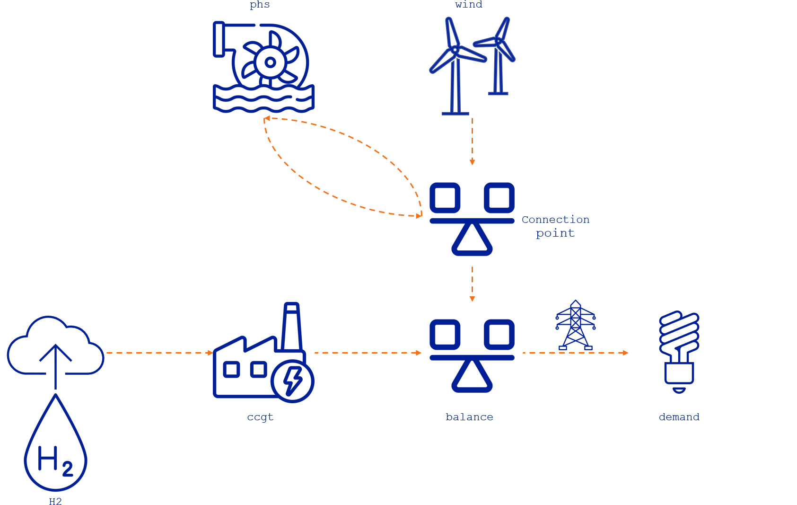
In this system, the phs storage asset charges and discharges from the connection point, while the wind turbine produces power that goes directly to the connection point. This connection point is connected to the external power grid through a transmission line that leads to a balance hub that connects to other assets. Essentially, the connection point acts as a balancing hub point for the assets in this hybrid configuration. Furthermore, these hybrid configurations impose an extra constraint to avoid storage charges from the power grid.
Let's consider the modeling approach in TulipaEnergyModel.jl. As nodes are no longer needed to connect assets, we can connect them directly to each other, as shown in the figure below:
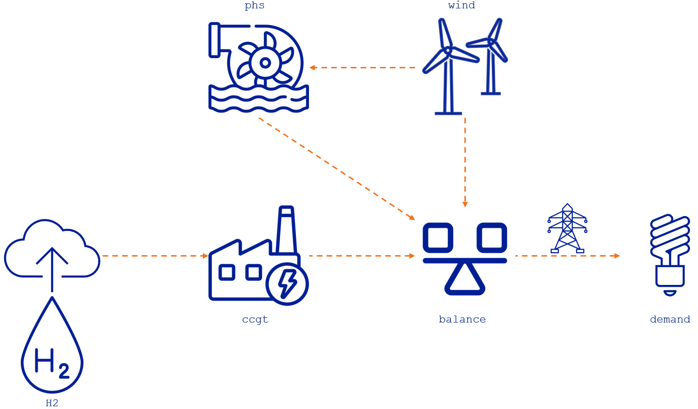
By implementing this approach, we can reduce the number of variables and constraints involved. For example, the balance constraint in the intermediate node and the extra constraint to avoid the storage charging from the power grid are no longer needed. Additionally, we can eliminate the variable determining the flow between the intermediate node and the power grid, because the flow from phs to balance can directly link to the external grid. The section comparison of different modeling approaches shows the quantification of these reductions.
This example of a phs and a wind asset is useful for illustrating the advantages of this modeling approach and will be reused in the following sections. However, please keep in mind that there are other applications of hybrid configurations, such as battery-solar, hydro-solar, and electrolyzer-wind.
Additional explanation on transport flows
In TulipaEnergyModel.jl, flows can be both input/output flows and transport flows (i.e., where you model a transmission asset). In the above illustrative example, wind-balance is an energy output flow, representing the production from wind directly sent to balance. In this case, the flow has a direction from wind to balance. However, in principle, any flow can be a transport flow and by definition in TulipaEnergyModel.jl, transport flows are bidirectional.
Let's zoom in on the phs-wind-balance triangle and see what happens in the figure below. To the left, all three flows have transformed into transport flows, and they are now bidirectional. Flows can go towards wind, which can be counter-intuitive: what does it mean to have a producer receiving energy? Translating into a standard method may help the thinking, we are essentially modeling the case to the right. The producer cannot receive energy, but transport flows can pass through an extra node with a unidirectional flow from the producer. We reduce this unnecessary node, but the modeling problem is not changed.
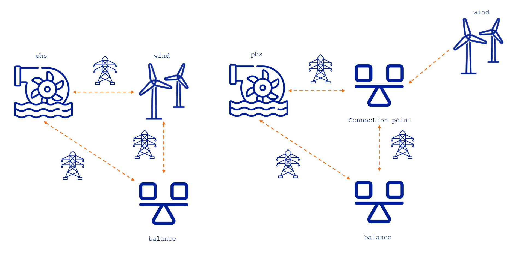
- Although transport flows are bidirectional, they must be defined in a single direction. For example, a producer like wind can only have outgoing flows. Thus, the flow between
windandbalancemust be specified as the flow fromwindtobalance, with its sign allowed to be free. - By having transport flows, we now model a different problem because flows can pass through
windfollowing the direction frombalancetowindtophs.windis essentially a hub asset. However, this does not affect the unidirectional nature of charging by the flow fromwindtophsand discharging by the flow fromphstobalance, which remain fixed by the definition of the flows.
Flexible Time Resolution
One of the core features of TulipaEnergyModel.jl is that it can handle different time resolutions on the assets and the flows. Typically, the time resolution in an energy model is hourly, like in the following figure where we have a 6-hour energy system:
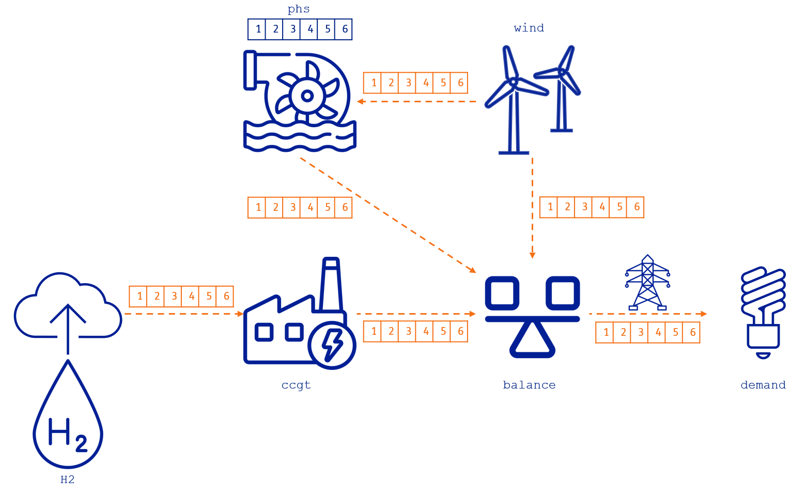
Therefore, for this simple example, we can determine the number of constraints and variables in the optimization problem:
Number of variables: 42 since we have six connections among assets (i.e., 6 flows x 6 hours = 36 variables) and one storage asset (i.e., 1 storage level x 6 h = 6 variables)
Number of constraints: 72, which are:
- 24 from the maximum output limit of the assets that produce, convert, or discharge energy (i.e.,
H2,wind,ccgt, andphs) for each hour (i.e., 4 assets x 6 h = 24 constraints) - 6 from the maximum input limit of the storage or charging limit for the
phs - 6 from the maximum storage level limit for the
phs - 12 from the import and export limits for the transmission line between the
balancehub and thedemand - 24 from the energy balance on the consumer, hub, conversion, and storage assets (i.e.,
demand,balance,ccgt, andphs) for each hour (i.e., 4 assets x 6 h = 24 constraints)
- 24 from the maximum output limit of the assets that produce, convert, or discharge energy (i.e.,
Depending on the input data and the level of detail you want to model, hourly resolution in all the variables might not be necessary. TulipaEnergyModel.jl can have different time resolutions for each asset and flow to simplify the optimization problem and approximate hourly representation. This feature is useful for large-scale energy systems that involve multiple sectors, as detailed granularity is not always necessary due to the unique temporal dynamics of each sector. For instance, we can use hourly resolution for the electricity sector and six-hour resolution for the hydrogen sector. We can couple multiple sectors, each with its own temporal resolution.
Let's explore the flexibility of time resolution with a few examples.
The following table shows the user input data for the definition of asset time resolution. Please note that the values presented in this example are just for illustrative purposes and do not represent a realistic case.
| Row | asset | year | rep_period | specification | partition |
|---|---|---|---|---|---|
| String7 | Int64 | Int64 | String7 | Int64 | |
| 1 | H2 | 2030 | 1 | uniform | 6 |
| 2 | phs | 2030 | 1 | uniform | 6 |
The table shows that the H2 producer and the phs storage have a uniform definition of 6 hours. This definition means we want to represent the H2 production profile and the storage level of the phs every six hours.
The same time resolution can be specified for the flows, for example (again, the values are for illustrative purposes and do not represent a realistic case):
| Row | from_asset | to_asset | year | rep_period | specification | partition |
|---|---|---|---|---|---|---|
| String7 | String7 | Int64 | Int64 | String7 | String7 | |
| 1 | H2 | ccgt | 2030 | 1 | uniform | 6 |
| 2 | wind | balance | 2030 | 1 | math | 1x2+1x4 |
| 3 | wind | phs | 2030 | 1 | uniform | 3 |
| 4 | phs | balance | 2030 | 1 | math | 1x4+1x2 |
| 5 | balance | demand | 2030 | 1 | uniform | 3 |
The table shows a uniform definition for the flow from the hydrogen producer (H2) to the conversion asset (ccgt) of 6 hours, from the wind producer (wind) to the storage (phs) of 3 hours, and from the balance hub (balance) to the consumer (demand) of 3 hours, too. In addition, the flow from the wind producer (wind) to the balance hub (balance) is defined using the math specification of 1x2+1x4, meaning that there are two time blocks, one of two hours (i.e., 1:2) and another of four hours (i.e., 3:6). Finally, the flow from the storage (phs) to the balance hub (balance) is defined using the math specification of 1x4+1x2, meaning that there are two time blocks, one of four hours (i.e., 1:4) and another of two hours (i.e., 5:6).
The following figure illustrates these definitions on the example system.
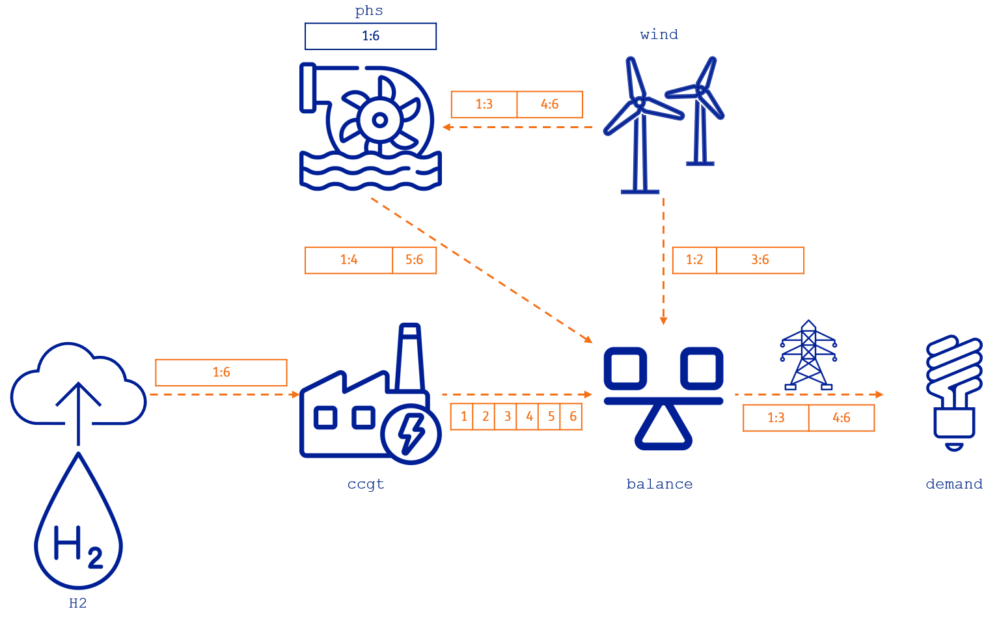
So, let's recap:
- The hydrogen producer (
H2) is in a 6-hour resolution represented by the range1:6, meaning that the balance of the hydrogen produced is for every 6 hours. - The flow from the hydrogen producer to the ccgt power plant (
H2,ccgt) is also in a 6-hour resolution1:6. - The flow from the ccgt power plant to the balance hub (
ccgt, balance) has hourly resolution[1,2,3,4,5,6]. - The
ccgtis a conversion plant that takes hydrogen to produce electricity. Since both sectors have different time resolutions, the energy balance in the conversion asset is defined in the lowest resolution connecting to the asset. In this case, the energy balance in theccgtis defined every 6 hours, i.e., in the range1:6. - The
windproducer has an hourly profile of electricity production, so the resolution of the asset is hourly. - The
windproducer output has two connections, one to thebalancehub and the other to the pumped-hydro storage (phs) with different resolutions:- The flow from the wind producer to the phs storage (
wind, phs) has a uniform resolution of two blocks from hours 1 to 3 (i.e.,1:3) and from hours 4 to 6 (i.e.,4:6). - The flow from the wind producer to the balance hub (
wind, balance) has a variable resolution of two blocks, too, but from hours 1 to 2 (i.e.,1:2) and from hours 3 to 6 (i.e.,3:6).
- The flow from the wind producer to the phs storage (
- The
phsis in a 6-hour resolution represented by the range1:6, meaning the storage balance is determined every 6 hours. - The flow from the phs to the balance (
phs, balance) represents the discharge of thephs. This flow has a variable resolution of two blocks from hours 1 to 4 (i.e.,1:4) and from hours 5 to 6 (i.e.,5:6), which differs from the one defined for the charging flow from thewindasset. - The
demandconsumption has hourly input data with one connection to thebalancehub:- The flow from the balance hub to the demand (
balance, demand) has a uniform resolution of 3 hours; therefore, it has two blocks, one from hours 1 to 3 (i.e.,1:3) and the other from hours 4 to 6 (i.e.,4:6).
- The flow from the balance hub to the demand (
- The
balancehub integrates all the different assets with their different resolutions. The lowest resolution of all connections determines the balance equation for this asset. Therefore, the resulting resolution is into two blocks, one from hours 1 to 4 (i.e.,1:4) and the other from hours 5 to 6 (i.e.,5:6).
This example demonstrates that different time resolutions can be assigned to each asset and flow in the model. Furthermore, the resolutions do not need to be multiples of one another or evenly distributed and they can vary throughout the time horizon.
The complete input data for this example can be found in the variable resolution example.
Due to the flexible resolution, we must explicitly state how the constraints are constructed. For each constraint, three things need to be considered:
- Whether it is type power or type energy.
- type power: highest resolution
- type energy: lowest resolution (multiplied by durations)
- How the resolution is determined (regardless of whether it is highest or lowest): the incoming flows, the outgoing flows, or a combination of both.
- How the related parameters are treated. We use two methods of aggregation, sum or mean.
Below is the table outlining the details for each type of constraint.
To calculte the resolution of the constraints we use the min function to determine which is the highest resolution in the constraint, and the max function to determine the lowest resolution in the constraint. For example, the consumer balance is defined as power type, and it involves the inputs and outputs, then the constraint resolution must be the minimum resolution among them to ensure it is on the highest resolution. Then, if you have an input of 1h resolution and an output of 2h resolution; then the resolution of the constraint must be 1h (i.e., min(1h,2h)).
| Name | Variables involved | Profile involved | Constraint type | Resolution of the constraints | Profile aggregation |
|---|---|---|---|---|---|
| Consumer Balance | inputs, outputs | demand | power | min(incoming flows, outgoing flows) | mean |
| Storage Balance | inputs, outputs, storage level | inflows | energy | max(asset, min(incoming flows, outgoing flows)) | sum |
| Hub Balance | inputs, outputs | - | power | min(incoming flows, outgoing flows) | - |
| Conversion Balance | inputs, outputs [1] | - | energy | max(incoming flows, outgoing flows) | - |
| Producers Capacity Constraints | outputs | availability | power | min(outgoing flows) | mean |
| Storage Capacity Constraints (outgoing) | outputs | - | power | min(outgoing flows) | - |
| Conversion Capacity Constraints (outgoing) | outputs | - | power | min(outgoing flows) | - |
| Conversion Capacity Constraints (incoming) | inputs | - | power | min(incoming flows) | - |
| Storage Capacity Constraints (incoming) | inputs | - | power | min(incoming flows) | - |
| Transport Capacity Constraints (upper bounds) | flow | availability | power | if it connects two hubs or demands then max(hub a,hub b), otherwise its own | mean |
| Transport Capacity Constraints (lower bounds) | flow | availability | power | if it connects two hubs or demands then max(hub a,hub b), otherwise its own | mean |
| Maximum Energy Limits (outgoing) | outputs | max_energy | energy | Determine by timeframe partitions. The default value is for each period in the timeframe | sum |
| Minimum Energy Limits (outgoing) | outputs | min_energy | energy | Determine by timeframe partitions. The default value is for each period in the timeframe | sum |
| Maximum Output Flow with Unit Commitment | outputs, units_on | availability | power | min(outgoing flows, units_on) | mean |
| Minimum Output Flow with Unit Commitment | outputs, units_on | availability | power | min(outgoing flows, units_on) | mean |
| Maximum Ramp Up Flow with Unit Commitment | outputs, units_on | availability | power | min(outgoing flows, units_on) | mean |
| Maximum Ramp Down Flow with Unit Commitment | outputs, units_on | availability | power | min(outgoing flows, units_on) | mean |
| Maximum Ramp Up Flow without Unit Commitment | outputs | availability | power | min(outgoing flows) | mean |
| Maximum Ramp Down Flow without Unit Commitment | outputs | availability | power | min(outgoing flows) | mean |
| DC-OPF Constraint | flow, electricity_angle | - | power | min(neighboring assets, flow) | - |
| Flows relationships | flow 1, flow 2 | - | energy | max(flow1, flow2) | - |
For this basic example, we can describe the balance and capacity constraints in the model. For the sake of simplicity, we consider only the rep-period constraints, the representative period index is dropped from the equations, and there are no investment variables in the equations.
Energy Balance Constraints
In the following sections, we lay out all the balance constraints of this example.
Storage Balance
As shown in the table, the resolution of the storage balance is energy, which is calculated by max(asset, min(incoming flows, outgoing flows)). The resolutions of the incoming and outgoing flows of the storage are 1:3, 4:6, 1:4, and 5:6, resulting in a minimum resolution of 2. The resolution of the storage is 6. Then, max(asset, min(incoming flows, outgoing flows)) becomes max(6, min(3, (4, 2))) which results in 6, and thus this balance is for every 6 hours. The charging and discharging flows are multiplied by their durations to account for the energy in the range 1:6.
\[\begin{aligned} & \text{storage\_balance}_{\text{phs},1:6}: \\ & \qquad v^{\text{rep-period-storage}}_{\text{phs},1:6} = 3 \cdot p^{\text{eff}}_{(\text{wind},\text{phs})} \cdot v^{\text{flow}}_{(\text{wind},\text{phs}),1:3} + 3 \cdot p^{\text{eff}}_{(\text{wind},\text{phs})} \cdot v^{\text{flow}}_{(\text{wind},\text{phs}),4:6} \\ & \qquad \quad - \frac{4}{p^{\text{eff}}_{(\text{phs},\text{balance})}} \cdot v^{\text{flow}}_{(\text{phs},\text{balance}),1:4} - \frac{2}{p^{\text{eff}}_{(\text{phs},\text{balance})}} \cdot v^{\text{flow}}_{(\text{phs},\text{balance}),5:6} \\ \end{aligned}\]
Consumer Balance
The flows coming from the balancing hub are defined every 3 hours. Then, min(incoming flows, outgoing flows) becomes min(3, -) = 3, and thus balanced every 3 hours. The input demand is aggregated as the mean of the hourly values in the input data.
\[\begin{aligned} & \text{consumer\_balance}_{\text{demand},1:3}: \\ & \qquad v^{\text{flow}}_{(\text{balance},\text{demand}),1:3} = p^{\text{peak demand}}_{\text{demand}} \cdot \frac{\sum_{b=1}^{3} p^{\text{demand profile}}_{\text{demand},b}}{3} \\ & \text{consumer\_balance}_{\text{demand},4:6}: \\ & \qquad v^{\text{flow}}_{(\text{balance},\text{demand}),4:6} = p^{\text{peak demand}}_{\text{demand}} \cdot \frac{\sum_{b=4}^{6} p^{\text{demand profile}}_{\text{demand},b}}{3} \\ \end{aligned}\]
Hub Balance
The hub balance is quite interesting because it integrates several flow resolutions. Remember that we didn't define any specific time resolution for this asset. Therefore, the highest resolution of all incoming and outgoing flows in the horizon implies that the hub balance must be imposed for all 6 blocks since min(incoming flows, outgoing flows) becomes min(1,2,3,4) = 1
\[\begin{aligned} & \text{hub\_balance}_{\text{balance},1:1}: \\ & \qquad v^{\text{flow}}_{(\text{balance},\text{demand}),1:3} = v^{\text{flow}}_{(\text{ccgt},\text{balance}), 1:1} + v^{\text{flow}}_{(\text{wind},\text{balance}),1:2} + v^{\text{flow}}_{(\text{phs},\text{balance}),1:4} \\ & \text{hub\_balance}_{\text{balance},2:2}: \\ & \qquad v^{\text{flow}}_{(\text{balance},\text{demand}),1:3} = v^{\text{flow}}_{(\text{ccgt},\text{balance}), 2:2} + v^{\text{flow}}_{(\text{wind},\text{balance}),1:2} + v^{\text{flow}}_{(\text{phs},\text{balance}),1:4} \\ & \text{hub\_balance}_{\text{balance},3:3}: \\ & \qquad v^{\text{flow}}_{(\text{balance},\text{demand}),1:3} = v^{\text{flow}}_{(\text{ccgt},\text{balance}), 3:3} + v^{\text{flow}}_{(\text{wind},\text{balance}),3:6} + v^{\text{flow}}_{(\text{phs},\text{balance}),1:4} \\ & \text{hub\_balance}_{\text{balance},4:4}: \\ & \qquad v^{\text{flow}}_{(\text{balance},\text{demand}),4:6} = v^{\text{flow}}_{(\text{ccgt},\text{balance}), 4:4} + v^{\text{flow}}_{(\text{wind},\text{balance}),3:6} + v^{\text{flow}}_{(\text{phs},\text{balance}),1:4}\\ & \text{hub\_balance}_{\text{balance},5:5}: \\ & \qquad v^{\text{flow}}_{(\text{balance},\text{demand}),4:6} = v^{\text{flow}}_{(\text{ccgt},\text{balance}), 5:5} + v^{\text{flow}}_{(\text{wind},\text{balance}),3:6} + v^{\text{flow}}_{(\text{phs},\text{balance}),5:6} \\ & \text{hub\_balance}_{\text{balance},6:6}: \\ & \qquad v^{\text{flow}}_{(\text{balance},\text{demand}),4:6} = v^{\text{flow}}_{(\text{ccgt},\text{balance}), 6:6} + v^{\text{flow}}_{(\text{wind},\text{balance}),3:6} + v^{\text{flow}}_{(\text{phs},\text{balance}),5:6} \\ \end{aligned}\]
Conversion Balance
The flows connected to the CCGT conversion unit have different resolutions, too. In this case, the hydrogen imposes the lowest resolution; therefore, the energy balance in this asset is also every 6 hours.
\[\begin{aligned} & \text{conversion\_balance}_{\text{ccgt},1:6}: \\ & \qquad 6 \cdot p^{\text{eff}}_{(\text{H2},\text{ccgt})} \cdot v^{\text{flow}}_{(\text{H2},\text{ccgt}),1:6} = \frac{1}{p^{\text{eff}}_{(\text{ccgt},\text{balance})}} \sum_{b=1}^{6} v^{\text{flow}}_{(\text{ccgt},\text{balance}),b} \\ \end{aligned}\]
Capacity Constraints
All capacity constraints are defined in the highest resolution to guarantee that the flows are below the limits of each asset capacity.
Storage Capacity Constraints
Since the storage unit only has one input and output, the capacity limit constraints are in the same resolution as the individual flows. Therefore, the constraints for the outputs of the storage (i.e., discharging capacity limit) are:
\[\begin{aligned} & \text{max\_output\_flows\_limit}_{\text{phs},1:4}: \\ & \qquad v^{\text{flow}}_{(\text{phs},\text{balance}),1:4} \leq p^{\text{init capacity}}_{\text{phs}} \\ & \text{max\_output\_flows\_limit}_{\text{phs},5:6}: \\ & \qquad v^{\text{flow}}_{(\text{phs},\text{balance}),5:6} \leq p^{\text{init capacity}}_{\text{phs}} \\ \end{aligned}\]
And the constraints for the inputs of the storage (i.e., charging capacity limit) are:
\[\begin{aligned} & \text{max\_input\_flows\_limit}_{\text{phs},1:3}: \\ & \qquad v^{\text{flow}}_{(\text{wind},\text{phs}),1:3} \leq p^{\text{init capacity}}_{\text{phs}} \\ & \text{max\_input\_flows\_limit}_{\text{phs},4:6}: \\ & \qquad v^{\text{flow}}_{(\text{wind},\text{phs}),4:6} \leq p^{\text{init capacity}}_{\text{phs}} \\ \end{aligned}\]
Conversion Capacity Constraints
Similarly, each outflow is limited to the ccgt capacity for the conversion unit.
\[\begin{aligned} & \text{max\_output\_flows\_limit}_{\text{ccgt},b}: \\ & \qquad v^{\text{flow}}_{(\text{ccgt},\text{balance}),b} \leq p^{\text{init capacity}}_{\text{ccgt}} \quad \forall b \in [1,6] \\ \end{aligned}\]
Producer Capacity Constraints
The wind producer asset is interesting because the output flows are in different resolutions, i.e., 1:2, 3:6, 1:3, and 4:6. The highest resolution is 1:2, 3, and 4:6. Therefore, the constraints are as follows:
\[\begin{aligned} & \text{max\_output\_flows\_limit}_{\text{wind},1:2}: \\ & \qquad v^{\text{flow}}_{(\text{wind},\text{balance}),1:2} + v^{\text{flow}}_{(\text{wind},\text{phs}),1:3} \leq \frac{p^{\text{init capacity}}_{\text{wind}}}{2} \cdot \sum_{b=1}^{2} p^{\text{availability profile}}_{\text{wind},b} \\ & \text{max\_output\_flows\_limit}_{\text{wind},3}: \\ & \qquad v^{\text{flow}}_{(\text{wind},\text{balance}),3:6} + v^{\text{flow}}_{(\text{wind},\text{phs}),1:3} \leq p^{\text{init capacity}}_{\text{wind}} \cdot p^{\text{availability profile}}_{\text{wind},3} \\ & \text{max\_output\_flows\_limit}_{\text{wind},4:6}: \\ & \qquad v^{\text{flow}}_{(\text{wind},\text{balance}),3:6} + v^{\text{flow}}_{(\text{wind},\text{phs}),4:6} \leq \frac{p^{\text{init capacity}}_{\text{wind}}}{3} \cdot \sum_{b=4}^{6} p^{\text{availability profile}}_{\text{wind},b} \\ \end{aligned}\]
Since the flow variables $v^{\text{flow}}_{(\text{wind}, \text{balance}),1:2}$ and $v^{\text{flow}}_{(\text{wind}, \text{balance}),1:3}$ represent power, the first constraint sets the upper bound of the power for both timestep 1 and 2, by assuming an average capacity across these two timesteps. The same applies to the other two constraints.
The hydrogen (H2) producer capacity limit is straightforward, since both the asset and the flow definitions are in the same time resolution:
\[\begin{aligned} & \text{max\_output\_flows\_limit}_{\text{H2},1:6}: \\ & \qquad v^{\text{flow}}_{(\text{H2},\text{ccgt}),1:6} \leq p^{\text{init capacity}}_{\text{H2}} \cdot p^{\text{availability profile}}_{\text{H2},1:6} \\ \end{aligned}\]
Transport Capacity Constraints
For the connection from the hub to the demand, there are associated transmission capacity constraints, which are in the same resolution as the flow:
\[\begin{aligned} & \text{max\_transport\_flows\_limit}_{(\text{balance},\text{demand}),1:3}: \\ & \qquad v^{\text{flow}}_{(\text{balance},\text{demand}),1:3} \leq p^{\text{init export capacity}}_{(\text{balance},\text{demand})} \\ & \text{max\_transport\_flows\_limit}_{(\text{balance},\text{demand}),4:6}: \\ & \qquad v^{\text{flow}}_{(\text{balance},\text{demand}),4:6} \leq p^{\text{init export capacity}}_{(\text{balance},\text{demand})} \\ \end{aligned}\]
\[\begin{aligned} & \text{min\_transport\_flows\_limit}_{(\text{balance},\text{demand}),1:3}: \\ & \qquad v^{\text{flow}}_{(\text{balance},\text{demand}),1:3} \geq - p^{\text{init import capacity}}_{(\text{balance},\text{demand})} \\ & \text{min\_transport\_flows\_limit}_{(\text{balance},\text{demand}),4:6}: \\ & \qquad v^{\text{flow}}_{(\text{balance},\text{demand}),4:6} \geq - p^{\text{init import capacity}}_{(\text{balance},\text{demand})} \\ \end{aligned}\]
Storage Level limits
Since the system has a storage asset, we must limit the maximum storage level. The phs time resolution is defined for every 6 hours, so we only have one constraint.
\[\begin{aligned} & \text{max\_storage\_level\_limit}_{\text{phs},1:6}: \\ & \qquad v^{\text{rep-period-storage}}_{\text{phs},1:6} \leq p^{\text{init storage capacity}}_{\text{phs}} \end{aligned}\]
Comparison of Different Modeling Approaches
This section quantifies the advantages of the flexible connection and flexible time resolution in the TulipaEnergyModel.jl modeling approach. So, let us consider three different approaches based on the same example:
- Classic approach with hourly resolution: This approach needs an extra asset,
node, to create the hybrid operation of thephsandwindassets. - Flexible connection with hourly resolution: This approach uses the flexible connection to represent the hybrid operation of the
phsandwindassets. - Flexible connection and flexible time: This approach uses both features, the flexible connection and the flexible time resolution.
The table below shows the constraints and variables for each approach over a 6-hour horizon. These results show the potential of flexible connections and time resolution for reducing the size of the optimization model.
| Modeling approach | Nº Variables | Nº Constraints | Objective Function |
|---|---|---|---|
| Classic approach with hourly resolution | 48 | 84 | 28.4365 |
| Flexible connection with hourly resolution | 42 | 72 | 28.4365 |
| Flexible connection and time resolution | 16 | 29 | 28.4587 |
By comparing the classic approach with the other methods, we can analyze their differences:
- The flexible connection with hourly resolution reduces 6 variables ($12.5\%$) and 12 constraints ($\approx 14\%$). Notice that we include the 6 extra constraints related to not allowing charging from the grid, although these constraints can also be modeled as bounds. Finally, the objective function value is the same, since we use an hourly time resolution in both cases.
- The combination of features reduces 32 variables ($\approx 67\%$) and 55 constraints ($\approx 65\%$) with an approximation error of $\approx 0.073\%$.
The level of reduction and approximation error will depend on the case study. Some cases that would benefit from this feature include:
Coupling different energy sectors with various dynamics. For instance, methane, hydrogen, and heat sectors can be represented in energy models with lower resolutions (e.g., 4, 6, or 12h) than the electricity sector, usually modeled in higher resolutions (e.g., 1h, 30 min).
Having high resolutions for all assets in a large-scale case study may not be necessary. For example, if analyzing a European case study focusing on a specific country like The Netherlands, hourly details for distant countries (such as Portugal and Spain) may not be required. However, one would still want to consider their effect on The Netherlands without causing too much computational burden. In such cases, flexible time resolution can maintain hourly details in the focus country, while reducing the detail in distant countries by increasing their resolution (to two hours or more). This reduction allows a broader scope without over-burdening computation.
Flexible Time Resolution in the Unit Commitment and Ramping Constraints
In the previous section, we have seen how the flexible temporal resolution is handled for the model's flow capacity and balance constraints. Here, we show how flexible time resolution is applied when considering the model's unit commitment and ramping constraints. Let's consider the example in the folder test/inputs/UC-ramping to explain how all these constraints are created in TulipaEnergyModel.jl when having the flexible time resolution.
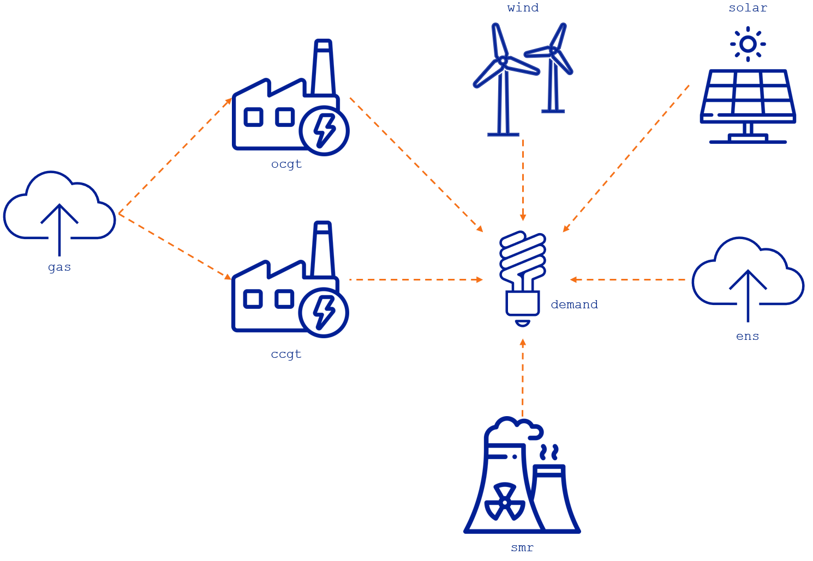
The example demonstrates various assets that supply demand. Each asset has different input data files, which activates different sets of constraints based on the method. For example, the gas producer has ramping constraints but not unit commitment constraints, while the ocgt conversion has unit commitment constraints but not ramping constraints. Lastly, the ccgt and smr assets both have unit commitment and ramping constraints. Moreover, ccgt, wind, solar, and ocgt are investable, meaning that the investment variable will only appear on the constraints related to those assets.
| Row | asset | type | capacity | initial_units | investable | unit_commitment | ramping | max_ramp_up | max_ramp_down |
|---|---|---|---|---|---|---|---|---|---|
| String7 | String15 | Float64 | Float64? | Bool? | Bool | Bool | Float64? | Float64? | |
| 1 | ccgt | conversion | 200.0 | 1.0 | true | true | true | 0.3 | 0.4 |
| 2 | wind | producer | 100.0 | 0.0 | true | false | false | missing | missing |
| 3 | solar | producer | 50.0 | 0.0 | true | false | false | missing | missing |
| 4 | smr | producer | 200.0 | 1.0 | false | true | true | 0.1 | 0.1 |
| 5 | gas | producer | 1800.0 | 1.0 | false | false | true | 0.83 | 0.83 |
| 6 | ocgt | conversion | 100.0 | 0.0 | true | true | false | missing | missing |
| 7 | ens | producer | 1150.0 | 1.0 | false | false | false | missing | missing |
The assets-rep-periods-partitions file defines the time resolution for the assets in the partition column. For instance, here we can see that the time resolutions are 3h for the ccgt and 6h for the smr. These values mean that the unit commitment variables (e.g., units_on) in the model have three and six hours resolution, respectively.
| Row | asset | specification | partition |
|---|---|---|---|
| String7 | String7 | Int64 | |
| 1 | ccgt | uniform | 3 |
| 2 | smr | uniform | 6 |
The flows-rep-periods-partitions file defines the time resolution for the flows. In this example, we have that the flows from the gas asset to the ccgt and from the ccgt asset to the demand are in a 2h resolution.
| Row | from_asset | to_asset | specification | partition |
|---|---|---|---|---|
| String7 | String7 | String7 | Int64 | |
| 1 | gas | ccgt | uniform | 2 |
| 2 | ccgt | demand | uniform | 2 |
The default value for the assets and flows partitions is 1 hour. This means that assets and flows not in the previous tables are considered on an hourly basis in the model.
It's not recommended to set up the input data partitions in such a way that the flow variables have a lower resolution than the units_on. This is because doing so will result in constraints that fix the value of the units_on in the timestep block where the flow is defined, leading to unnecessary extra variable constraints in the model. For instance, if the units_on are hourly and the flow is every two hours, then a non-zero flow in the timestep block 1:2 will require the units_on in timestep blocks 1:1 and 2:2 to be the same and equal to one. Therefore, the time resolution of the units_on should always be lower than or equal to the resolution of the flow in the asset.
Remember that the section mathematical formulation shows the unit commitment and ramping constraints in the model considering an uniform time resolution as a reference.
With this information, we can analyze the constraints in each of the following cases:
- Ramping in assets with multiple outputs
- Unit commitment in assets with constant time resolution
- Unit commitment and ramping in assets with flexible time resolution that are multiples of each other
- Unit commitment and ramping in assets with flexible time resolution that are not multiples of each other
We will analyze each case in the following sections, considering the constraints resolution defined in the summary table in the flexible time resolution section. For the sake of simplicity, we only show the asset $a$ and timestep block $b_k$ index and the constraints as they appear in the .lp file of the example, i.e., with all the coefficients and RHS values calculated from the input parameters. The .lp file can be exported using the keyword argument model_file_name = "model.lp" in the run_scenario function.
Ramping in Assets with Multiple Outputs
In the case of the gas asset, there are two output flows above the minimum operating point with different time resolutions. The ramping constraints follow the highest time resolution of the two flows at each timestep block. Since the highest resolution is always defined by the hourly output of the $v^{\text{flow}}_{(\text{gas,ocgt}),b_k}$, the ramping constraints are also hourly. The figure below illustrates this situation.
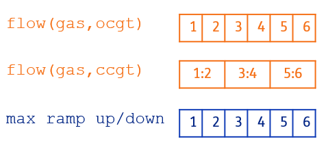
Let's now take a look at the resulting constraints in the model.
max_ramp_up(gas): The first constraint considers the ramping up of output flows of the gas asset from the first hour to the second ($b_{k = 2:2}$ to $b_{k = 1:1}$). Note that since the $v^{\text{flow}}_{(\text{gas,ccgt}),b_k}$ is defined in in blocks of 2 hours, we only need to consider the difference of the $v^{\text{flow}}_{(\text{gas,ocgt}),b_k}$ variable in this constraint. However, the second constraint takes the difference between the output flows from $b_{k = 3:3}$ to $b_{k = 2:2}$. For this constraint, we need to consider the difference in both $v^{\text{flow}}_{(\text{gas,ocgt}),b_k}$ and $v^{\text{flow}}_{(\text{gas,ccgt}),b_k}$.
The duration parameter in the right hand side (RHS) of this constraint, $\text{RHS} = p^{\text{capacity}}_{\text{gas}} \cdot p^{\text{max ramp up}}_{\text{gas}} \cdot p^{\text{duration}}_{b_k}$, is defined by the flow duration with the highest resolution, i.e., one hour, which is the duration of the $v^{\text{flow}}_{(\text{gas,ocgt}),b_k}$. We need to multiply by duration since the ramp input values are given as rates, i.e., p.u./h or p.u./min, so the RHS in the constraint must be multiplied by the duration to match the flow units. So, using the data for this example we have: $\text{RHS} = 1800 \text{MW} \cdot 0.83 \text{p.u./h} \cdot 1 \text{h} = 1494 \text{MW}$
\[\begin{aligned} & b_{k = 2:2}: - v^{\text{flow}}_{(\text{gas,ocgt}),1:1} + v^{\text{flow}}_{(\text{gas,ocgt}),2:2} \leq 1494 \\ & b_{k = 3:3}: - v^{\text{flow}}_{(\text{gas,ocgt}),2:2} + v^{\text{flow}}_{(\text{gas,ocgt}),3:3} - v^{\text{flow}}_{(\text{gas,ccgt}),1:2} + v^{\text{flow}}_{(\text{gas,ccgt}),3:4} \leq 1494 \\ & ... \end{aligned}\]
For the maximum ramp down we have similiar constraints as the ones shown above.
Unit Commitment in Assets with Constant Time Resolution
The ocgt asset includes both the $v^{\text{flow}}_{(\text{ocgt,demand}),b_k}$ and the asset time resolution, which defines the resolution of the units_on variable, with a default setting of one hour. As a result, the unit commitment constraints are also set on an hourly basis. This is the conventional method for representing these types of constraints in power system models. The figure below illustrates this situation.
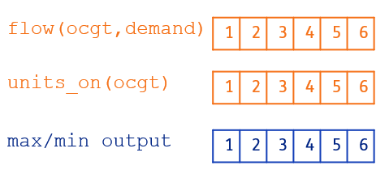
Let's now take a look at the resulting constraints in the model. Because everything is based on an hourly timestep, the equations are simple and easy to understand.
limit_units_on(ocgt): The upper bound of the units_on is the investment variable of the asset
\[\begin{aligned} & b_{k = 1:1}: v^{\text{units on}}_{\text{ocgt},1:1} \leq v^{\text{inv}}_{\text{ocgt}} \\ & b_{k = 2:2}: v^{\text{units on}}_{\text{ocgt},2:2} \leq v^{\text{inv}}_{\text{ocgt}} \\ & ... \end{aligned}\]
min_output_flow(ocgt): The minimum operating point is 10 MW, so the asset must produce an output flow greater than this value when the unit is online.
\[\begin{aligned} & b_{k = 1:1}: v^{\text{flow}}_{(\text{ocgt,demand}),1:1} \geq 10 \cdot v^{\text{units on}}_{\text{ocgt},1:1} \\ & b_{k = 2:2}: v^{\text{flow}}_{(\text{ocgt,demand}),2:2} \geq 10 \cdot v^{\text{units on}}_{\text{ocgt},2:2} \\ & ... \end{aligned}\]
max_output_flow(ocgt): The capacity is 100 MW, so the asset must produce an output flow lower than this value when the unit is online.
\[\begin{aligned} & b_{k = 1:1}: v^{\text{flow}}_{(\text{ocgt,demand}),1:1} \leq 100 \cdot v^{\text{units on}}_{\text{ocgt},1:1} \\ & b_{k = 2:2}: v^{\text{flow}}_{(\text{ocgt,demand}),2:2} \leq 100 \cdot v^{\text{units on}}_{\text{ocgt},2:2} \\ & ... \end{aligned}\]
For the maximum ramp down we have similiar constraints as the ones shown above.
Unit Commitment and Ramping in Assets with Flexible Time Resolution that are Multiples of Each Other
In this case, the smr asset has an output $v^{\text{flow}}_{(\text{smr,demand}),b_k}$ in a hourly basis, but its time resolution (i.e., partition) is every six hours. Therefore, the unist_on variables are defined in timestep block of every six hours. As a result, the unit commitment and ramping constraints are set on highest resolution of both, i.e., the hourly resolution of the $v^{\text{flow}}_{(\text{smr,demand}),b_k}$. The figure below illustrates this situation.
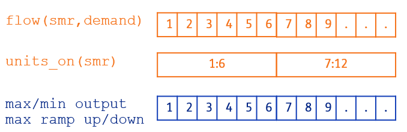
Let's now take a look at the resulting constraints in the model.
limit_units_on(smr): The units_on variables are defined every 6h; therefore, the upper bound of the variable is also every 6h. In addition, the smr is not investable and has one existing unit that limits the commitment variables.
\[\begin{aligned} & b_{k = 1:6}: v^{\text{units on}}_{\text{smr},1:6} \leq 1 \\ & b_{k = 7:12}: v^{\text{units on}}_{\text{smr},7:12} \leq 1 \\ & ... \end{aligned}\]
min_output_flow(smr): The minimum operating point is 150 MW, so the asset must produce an output flow greater than this value when the unit is online. Since the units_on variables are defined every 6h, the first six constraints show that the minimum operating point is multiplied by the variable in block 1:6. The next six constraints are multiplied by the units_on in block 7:12, and so on.
\[\begin{aligned} & b_{k = 1:1}: v^{\text{flow}}_{(\text{smr,demand}),1:1} \geq 150 \cdot v^{\text{units on}}_{\text{smr},1:6} \\ & b_{k = 2:2}: v^{\text{flow}}_{(\text{smr,demand}),2:2} \geq 150 \cdot v^{\text{units on}}_{\text{smr},1:6} \\ & ... \\ & b_{k = 6:6}: v^{\text{flow}}_{(\text{smr,demand}),6:6} \geq 150 \cdot v^{\text{units on}}_{\text{smr},1:6} \\ & b_{k = 7:7}: v^{\text{flow}}_{(\text{smr,demand}),7:7} \geq 150 \cdot v^{\text{units on}}_{\text{smr},7:12} \\ & ... \end{aligned}\]
max_output_flow(smr): The capacity is 200 MW, so the asset must produce an output flow lower than this value when the unit is online. Similiar to the minimum operating point constraint, here the units_on for the timestep block 1:6 are used in the first six constraints, the units_on for the timestep block 7:12 are used in the next six constraints, and so on.
\[\begin{aligned} & b_{k = 1:1}: v^{\text{flow}}_{(\text{smr,demand}),1:1} \leq 200 \cdot v^{\text{units on}}_{\text{smr},1:6} \\ & b_{k = 2:2}: v^{\text{flow}}_{(\text{smr,demand}),2:2} \leq 200 \cdot v^{\text{units on}}_{\text{smr},1:6} \\ & ... \\ & b_{k = 6:6}: v^{\text{flow}}_{(\text{smr,demand}),6:6} \leq 200 \cdot v^{\text{units on}}_{\text{smr},1:6} \\ & b_{k = 7:7}: v^{\text{flow}}_{(\text{smr,demand}),7:7} \leq 200 \cdot v^{\text{units on}}_{\text{smr},7:12} \\ & ... \end{aligned}\]
max_ramp_up(smr): The ramping capacity is 20MW, so the change in the output flow above the minimum operating point needs to be below that value when the asset is online. For constraints from 2:2 to 6:6, the units_on variable is the same, i.e., units_on at timestep block 1:6. The ramping constraint at timestep block 7:7 shows the units_on from the timestep block 1:6 and 7:12 since the change in the flow includes both variables. Note that if the units_on variable is zero in the timestep block 1:6, then the ramping constraint at timestep block 7:7 allows the asset to go from zero flow to the minimum operating point plus the ramping capacity (i.e., 150 + 20 = 170).
\[\begin{aligned} & b_{k = 2:2}: - v^{\text{flow}}_{(\text{smr,demand}),1:1} + v^{\text{flow}}_{(\text{smr,demand}),2:2} \leq 20 \cdot v^{\text{units on}}_{\text{smr},1:6} \\ & b_{k = 3:3}: - v^{\text{flow}}_{(\text{smr,demand}),2:2} + v^{\text{flow}}_{(\text{smr,demand}),3:3} \leq 20 \cdot v^{\text{units on}}_{\text{smr},1:6} \\ & ... \\ & b_{k = 6:6}: - v^{\text{flow}}_{(\text{smr,demand}),5:5} + v^{\text{flow}}_{(\text{smr,demand}),6:6} \leq 20 \cdot v^{\text{units on}}_{\text{smr},1:6} \\ & b_{k = 7:7}: - v^{\text{flow}}_{(\text{smr,demand}),6:6} + v^{\text{flow}}_{(\text{smr,demand}),7:7} \leq - 150 \cdot v^{\text{units on}}_{\text{smr},1:6} + 170 \cdot v^{\text{units on}}_{\text{smr},7:12} \\ & b_{k = 8:8}: - v^{\text{flow}}_{(\text{smr,demand}),7:7} + v^{\text{flow}}_{(\text{smr,demand}),8:8} \leq 20 \cdot v^{\text{units on}}_{\text{smr},7:12} \\ & ... \end{aligned}\]
For the maximum ramp down we have similiar constraints as the ones shown above.
Unit Commitment and Ramping in Assets with Flexible Time Resolution that are NOT Multiples of Each Other
In this case, the ccgt asset has an output $v^{\text{flow}}_{(\text{ccgt,demand}),b_k}$ on a two-hour basis, but its time resolution (i.e., partition) is every three hours. Therefore, the unist_on variables are defined in a timestep block every three hours. This setup means that the flow and unit commitment variables are not multiples of each other. As a result, the unit commitment and ramping constraints are defined on the highest resolution, meaning that we also need the intersections of both resolutions. The figure below illustrates this situation.
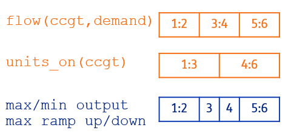
Let's now take a look at the resulting constraints in the model.
limit_units_on(ccgt): The units_on variables are defined every 3h; therefore, the upper bound of the variable is also every 3h. In addition, the ccgt is investable and has one existing unit that limits the commitment variables.
\[\begin{aligned} & b_{k = 1:3}: v^{\text{units on}}_{\text{ccgt},1:3} \leq 1 + v^{\text{inv}}_{\text{ccgt}} \\ & b_{k = 4:6}: v^{\text{units on}}_{\text{ccgt},4:6} \leq 1 + v^{\text{inv}}_{\text{ccgt}} \\ & ... \end{aligned}\]
min_output_flow(ccgt): The minimum operating point is 50 MW, so the asset must produce an output flow greater than this value when the unit is online. Here, we can see the impact of the constraints of having different temporal resolutions that are not multiples of each other. For instance, the constraint is defined for all the intersections, so 1:2, 3:3, 4:4, 5:6, etc., to ensure that the minimum operating point is correctly defined considering all the timestep blocks of the flow and the units_on variables.
\[\begin{aligned} & b_{k = 1:2}: v^{\text{flow}}_{(\text{ccgt,demand}),1:2} \geq 50 \cdot v^{\text{units on}}_{\text{ccgt},1:3} \\ & b_{k = 3:3}: v^{\text{flow}}_{(\text{ccgt,demand}),3:4} \geq 50 \cdot v^{\text{units on}}_{\text{ccgt},1:3} \\ & b_{k = 4:4}: v^{\text{flow}}_{(\text{ccgt,demand}),3:4} \geq 50 \cdot v^{\text{units on}}_{\text{ccgt},4:6} \\ & b_{k = 5:6}: v^{\text{flow}}_{(\text{ccgt,demand}),5:6} \geq 50 \cdot v^{\text{units on}}_{\text{ccgt},4:6} \\ & ... \end{aligned}\]
max_output_flows(ccgt): The capacity is 200 MW, so the asset must produce an output flow lower than this value when the unit is online. The situation is similar as in the minimum operating point constraint, we have constraints for all the intersections of the resolutions to ensure the correct definition of the maximum capacity.
\[\begin{aligned} & b_{k = 1:2}: v^{\text{flow}}_{(\text{ccgt,demand}),1:2} \leq 200 \cdot v^{\text{units on}}_{\text{ccgt},1:3} \\ & b_{k = 3:3}: v^{\text{flow}}_{(\text{ccgt,demand}),3:4} \leq 200 \cdot v^{\text{units on}}_{\text{ccgt},1:3} \\ & b_{k = 4:4}: v^{\text{flow}}_{(\text{ccgt,demand}),3:4} \leq 200 \cdot v^{\text{units on}}_{\text{ccgt},4:6} \\ & b_{k = 5:6}: v^{\text{flow}}_{(\text{ccgt,demand}),5:6} \leq 200 \cdot v^{\text{units on}}_{\text{ccgt},4:6} \\ & ... \end{aligned}\]
max_ramp_up(ccgt): The ramping capacity is 120MW, so the change in the output flow above the minimum operating point needs to be below that value when the asset is online. When the time resolutions of the flow and units_on are not multiples of each other, we encounter some counterintuitive constraints. For example, consider the constraint at timestep block 4:4. This constraint only involves units_on variables because the flow above the minimum operating point at timestep block 4:4 differs from the previous timestep block 3:3 only in terms of the units_on variables. As a result, the ramping-up constraint establishes a relationship between the units_on variable at 1:3 and 4:6. This means that if the unit is on at timestep 1:3, then it must also be on at timestep 4:6. However, this is redundant because there is already a flow variable defined for 3:4 that ensures this, thanks to the minimum operating point and maximum capacity constraints. Therefore, although this constraint is not incorrect, it is unnecessary due to the flexible time resolutions that are not multiples of each other.
\[\begin{aligned} & b_{k = 3:3}: - v^{\text{flow}}_{(\text{ccgt,demand}),1:2} + v^{\text{flow}}_{(\text{ccgt,demand}),3:4} \leq 120 \cdot v^{\text{units on}}_{\text{ccgt},1:3} \\ & b_{k = 4:4}: 0 \leq - 50 \cdot v^{\text{units on}}_{\text{ccgt},1:3} + 170 \cdot v^{\text{units on}}_{\text{ccgt},4:6} \\ & b_{k = 5:6}: - v^{\text{flow}}_{(\text{ccgt,demand}),3:4} + v^{\text{flow}}_{(\text{ccgt,demand}),5:6} \leq 120 \cdot v^{\text{units on}}_{\text{ccgt},4:6} \\ & b_{k = 7:8}: - v^{\text{flow}}_{(\text{ccgt,demand}),5:6} + v^{\text{flow}}_{(\text{ccgt,demand}),7:8} \leq - 50 \cdot v^{\text{units on}}_{\text{ccgt},4:6} + 170 \cdot v^{\text{units on}}_{\text{ccgt},7:9} \\ & b_{k = 9:9}: - v^{\text{flow}}_{(\text{ccgt,demand}),7:8} + v^{\text{flow}}_{(\text{ccgt,demand}),9:10} \leq 120 \cdot v^{\text{units on}}_{\text{ccgt},7:9} \\ & ... \end{aligned}\]
For the maximum ramp down we have similiar constraints as the ones shown above.
The time resolutions of the unit commitment constraints do not have to be multiples of each other. However, using multiples of each other can help avoid extra redundant constraints.
Unit Commitment and Ramping Case Study Results
Let's now optimize the model for the data in the example test/inputs/UC-ramping and explore the results. The first result is the unit commitment of the assets with this method, i.e., ocgt, ccgt, and smr. One of the characteristics of having flexible time resolution on the unit commitment variables (e.g., units_on) is that it allows us to consider implicitly minimum up/down times in a simplified manner. For instance, the ccgt asset can only increase the number of units every 3h, and the smr can only start up again after 6h.
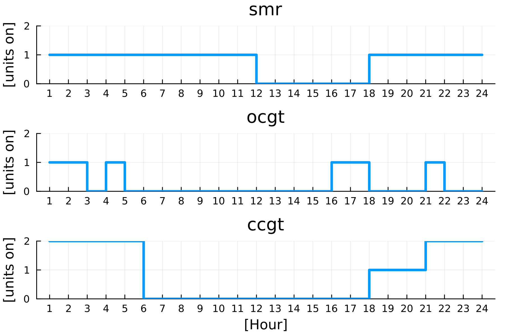
Let's now examine the hourly production balance in the results. We can see that the assets with a unit commitment method only produce electricity (e.g., flow to the demand asset) when they are on (units_on >= 1). In addition, the smr has a slow flow change due to its ramping limits.
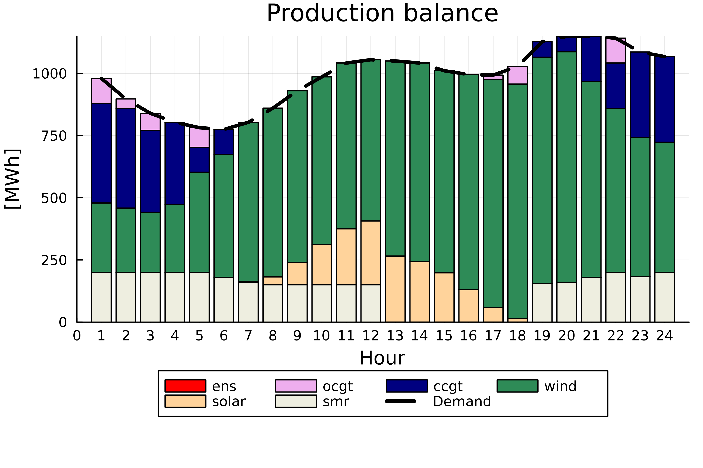
In this example, we demonstrated the use of unit commitment and ramping constraints with flexible time resolution in the model, and we illustrated what the results look like. The flexible time resolution applied to the unit commitment variables aids in minimizing the number of binary/integer variables in the model and simplifies the representation of the assets' minimum up and down times.
Storage Modeling
Energy storage systems can be broadly classified into two categories: seasonal and non-seasonal storage. Seasonal storage refers to assets that can store energy for more extended periods, usually spanning months or even years. Examples of such assets include hydro reservoirs, hydrogen storage in salt caverns, or empty gas fields. On the other hand, non-seasonal storage refers to assets that can store energy only for a few hours, such as batteries or small pumped-hydro storage units.
Both storage categories can be represented in TulipaEnergyModel.jl using the representative periods approach:
- Non-seasonal storage: When the storage capacity of an asset is lower than the total length of representative periods, like in the case of a battery with a storage capacity of 4 hours and representative periods of 24-hour timesteps, rep-period constraints should be applied.
- Seasonal storage: When the storage capacity of an asset is greater than the total length of representative periods, like in the case of a hydroplant with a storage capacity of a month and representative periods of 24-hour timesteps, over-clustered-year constraints should be applied.
The equations of rep-period and over-clustered-year constraints for energy storage are available in the mathematical formulation. An example is shown in the following section to explain these concepts. In addition, the section seasonal and non-seasonal storage setup shows how to set the parameters in the model to consider each type in the storage assets.
Example to Model Seasonal and Non-seasonal Storage
We use the example in the folder test/inputs/Storage to explain how all these concepts come together in TulipaEnergyModel.jl.
Let's first look at this feature's most relevant input data in the input files. Here, we show only the storage assets and the appropriate columns for this example, but all the input data can be found in the previously mentioned folder.
| Row | asset | type | capacity | capacity_storage_energy | is_seasonal |
|---|---|---|---|---|---|
| String7 | String15 | Float64 | Float64 | Bool | |
| 1 | battery | storage | 10.0 | 20.0 | false |
| 2 | phs | storage | 100.0 | 4800.0 | true |
The is_seasonal parameter determines whether or not the storage asset uses the over-clustered-year constraints. The phs is the only storage asset with this type of constraint and over-clustered-year-storage level variable (i.e., $v^{\text{over-clustered-year-storage}}_{\text{phs},p}$), and has 100MW capacity and 4800MWh of storage capacity (i.e., 48h discharge duration). The battery will only consider rep-period constraints with rep-period-storage level variables (i.e., $v^{\text{rep-period-storage}}_{\text{battery},k,b_k}$), and has 10MW capacity with 20MWh of storage capacity (i.e., 2h discharge duration).
The rep-periods-data file has information on the representative periods in the example. We have three representative periods, each with 24 timesteps and hourly resolution, representing a day. The figure below shows the availability profile of the renewable energy sources in the example.
| Row | year | rep_period | num_timesteps | resolution |
|---|---|---|---|---|
| Int64 | Int64 | Int64 | Float64 | |
| 1 | 2030 | 1 | 24 | 1.0 |
| 2 | 2030 | 2 | 24 | 1.0 |
| 3 | 2030 | 3 | 24 | 1.0 |
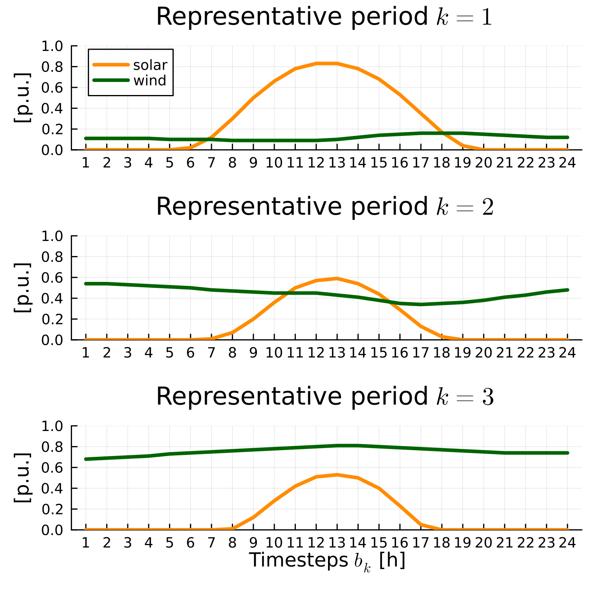
The rep-periods-mapping relates each representative period with the periods in the timeframe. We have seven periods in this case, meaning the timeframe is a week. Each value in the file indicates the weight of each representative period in the timeframe period. Notice that each period is composed of a linear combination of the representative periods. For more details on obtaining the representative periods and the weights, please look at TulipaClustering.jl. For the sake of readability, we show here the information in the file in tabular form:
| Row | period | k=1 | k=2 | k=3 |
|---|---|---|---|---|
| Int64 | Float64 | Float64 | Float64 | |
| 1 | 1 | 0.0 | 1.0 | 0.0 |
| 2 | 2 | 0.2 | 0.7 | 0.1 |
| 3 | 3 | 0.0 | 0.8 | 0.2 |
| 4 | 4 | 0.3 | 0.6 | 0.1 |
| 5 | 5 | 0.1 | 0.6 | 0.3 |
| 6 | 6 | 0.1 | 0.3 | 0.6 |
| 7 | 7 | 0.8 | 0.2 | 0.0 |
The file assets-timeframe-partitions has the information on how often we want to evaluate the over-clustered-year constraints that combine the information of the representative periods. In this example, the file is missing in the folder, meaning that the default of a uniform distribution of one period will be use in the model, see model parameters section. This assumption implies that the model will check the over-clustered-year-storage level every day of the week timeframe.
For the sake of simplicity, we show how using three representative days can recover part of the chronological information of one week. The same method can be applied to more representative periods to analyze the seasonality across a year or longer timeframe.
Now let's solve the example and explore the results:
using DuckDB, TulipaIO, TulipaEnergyModel
# input_dir should be the path to the Storage example
connection = DBInterface.connect(DuckDB.DB)
read_csv_folder(connection, input_dir; schemas = TulipaEnergyModel.schema_per_table_name)
energy_problem = run_scenario(connection)EnergyProblem:
- Model created!
- Number of variables: 727
- Number of constraints for variable bounds: 727
- Number of structural constraints: 957
- Model solved!
- Termination status: OPTIMAL
- Objective value: 2542.2343777832148
Since the battery is not seasonal, it only has results for the rep-period-storage level of each representative period, as shown in the following figure:
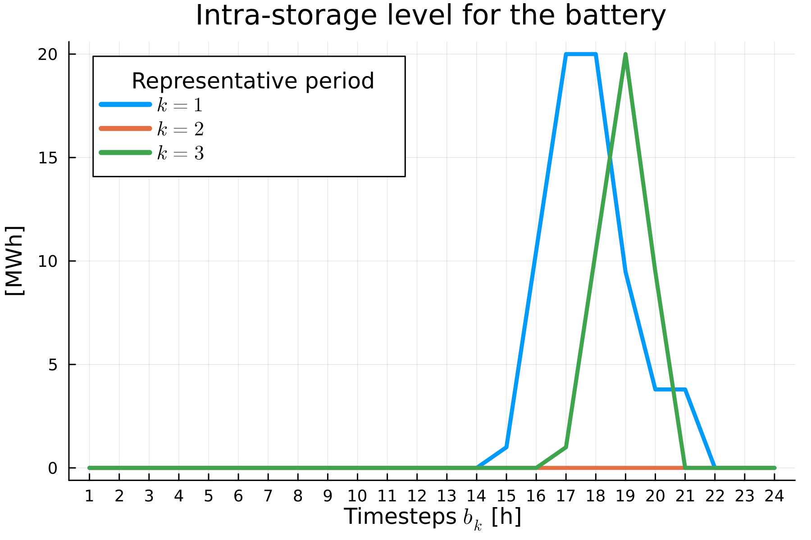
Since the phs is defined as seasonal, it has results for only the over-clustered-year-storage level. Since we defined the period partition as 1, we get results for each period (i.e., day). We can see that the over-clustered-year constraints in the model keep track of the storage level through the whole timeframe definition (i.e., week).
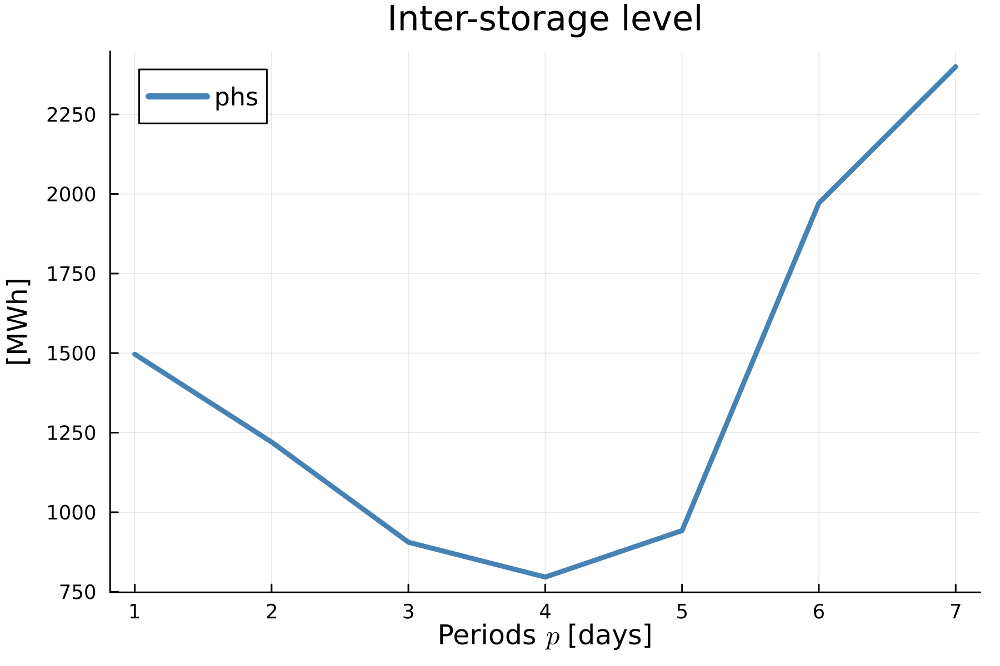
In this example, we have demonstrated how to partially recover the chronological information of a storage asset with a longer discharge duration (such as 48 hours) than the representative period length (24 hours). This feature enables us to model both short- and long-term storage in TulipaEnergyModel.jl.
Flexible Time Resolution in the Direct Current Optimal Power Flow Constraints
In this section, we show how flexible time resolution is applied when considering the model's direct current optimal power flow (DC-OPF) constraint. Let's consider the example in the folder test/inputs/Power-flow to explain how this constraint is created in TulipaEnergyModel.jl when having the flexible time resolution.
The following example demonstrates the impact of the DC-OPF constraints on system behavior. In this setup, demand can be met by two sources: ccgtand hub. The hub itself can receive energy from both ccgt and electricity imports. In the absence of power flow constraints, the model may choose to satisfy 100% of the demand directly via the ccgt to demand flow. However, when DC-OPF constraints are enforced, all three transport flows — ccgt to demand, ccgt to hub, and hub to demand must comply with the physical laws governing power flow. As a result, it becomes infeasible to supply the entire demand solely through the ccgt to demand path. Instead, the solution must account for the distribution of flows in accordance with the DC-OPF model.
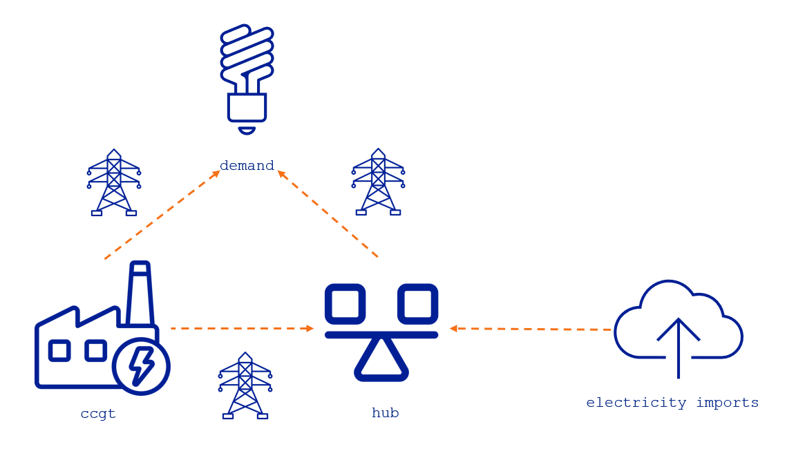
The assets-rep-periods-partitions file defines the time resolution for the assets in the partition column. Here we set the time resolution to 8h for the ccgt, 4h for the demand, 2h for the hub, and 1h for the import.
| Row | asset | specification | partition |
|---|---|---|---|
| String7 | String7 | Int64 | |
| 1 | ccgt | uniform | 8 |
| 2 | demand | uniform | 4 |
| 3 | hub | uniform | 2 |
| 4 | import | uniform | 1 |
- The resolutions of the assets determine the resolution of the unit commitment variables (when UC constraints are applied), storage level variables, and electricity angle variables (when DC-OPF constraints are applied).
- It is important to note that these resolutions do not dictate the resolution of the balance constraints. Instead, the resolution of balance constraints is derived from the rules outlined in the table under the section
flexible time resolution.
The flows-rep-periods-partitions file defines the time resolution for the flows, as shown below.
| Row | from_asset | to_asset | specification | partition |
|---|---|---|---|---|
| String7 | String7 | String7 | Int64 | |
| 1 | ccgt | hub | uniform | 2 |
| 2 | ccgt | demand | uniform | 4 |
| 3 | hub | demand | uniform | 2 |
| 4 | import | hub | uniform | 2 |
The Core Model
DC-OPF Constraints
The DC-OPF constraint is applied to every transport flow that utilizes the DC-OPF method. The resolution at which this constraint is enforced is determined by the highest resolution among the flow itself and its adjacent (neighboring) assets. To illustrate how this works in practice, we now examine each relevant flow individually.
The resolution of the DC-OPF constraint for flow ccgt to hub is 2h:
\[\begin{aligned} & \text{DC-OPF}_{(\text{ccgt}, \text{hub}),1:2}: \\ & \qquad v^{\text{flow}}_{(\text{ccgt},\text{hub}),1:2} = \frac{p^{\text{power system base}}}{p^{\text{reactance}}_{\text{ccgt},\text{hub}}} (v^{\text{electricity angle}}_{\text{ccgt},1:8} - v^{\text{electricity angle}}_{\text{hub},1:2}) \\ \end{aligned}\]
The resolution of the DC-OPF constraint for flow ccgt to demand is 4h:
\[\begin{aligned} & \text{DC-OPF}_{(\text{ccgt}, \text{demand}),1:4}: \\ & \qquad v^{\text{flow}}_{(\text{ccgt},\text{demand}),1:4} = \frac{p^{\text{power system base}}}{p^{\text{reactance}}_{\text{ccgt},\text{demand}}} (v^{\text{electricity angle}}_{\text{ccgt},1:8} - v^{\text{electricity angle}}_{\text{demand},1:4}) \\ \end{aligned}\]
The resolution of the DC-OPF constraint for flow hub to demand is 2h:
\[\begin{aligned} & \text{DC-OPF}_{(\text{hub}, \text{demand}),1:2}: \\ & \qquad v^{\text{flow}}_{(\text{hub},\text{demand}),1:2} = \frac{p^{\text{power system base}}}{p^{\text{reactance}}_{\text{hub},\text{demand}}} (v^{\text{electricity angle}}_{\text{hub},1:2} - v^{\text{electricity angle}}_{\text{demand},1:4}) \\ \end{aligned}\]
Consumer Balance Constraints
For demand, consumer balance applies. This constraint operates at the highest resolution among all incoming and outgoing flows connected to the asset. In this case, demand receives two incoming flows: ccgt to demand in 4h and hub to demand in 2h. As a result, the consumer balance is enforced in 2h resolution, which is the highest of the two.
\[\begin{aligned} & \text{consumer\_balance}_{\text{demand},1:2}: \\ & \qquad v^{\text{flow}}_{(\text{ccgt},\text{demand}),1:4} + v^{\text{flow}}_{(\text{hub},\text{demand}),1:2} \leq p^{\text{peak demand}}_{\text{demand}} \cdot \frac{\sum_{b=1}^{2} p^{\text{demand profile}}_{\text{demand},b}}{2} \\\\ \end{aligned}\]
Hub Balance Constraints
For hub, hub balance applies. This constraint also operates at the highest resolution among all incoming and outgoing flows connected to the asset. In this case, hub receives two incoming flows: ccgt to hub in 2h and import to hub in 2h, and an outgoing flow hub to demand in 2h. As a result, the hub balance is enforced in 2h resolution, which is the highest of the three.
\[\begin{aligned} & \text{hub\_balance}_{\text{demand},1:2}: \\ & \qquad v^{\text{flow}}_{(\text{ccgt},\text{hub}),1:2} + v^{\text{flow}}_{(\text{import},\text{hub}),1:2} = v^{\text{flow}}_{(\text{hub},\text{demand}),1:2} \\ \end{aligned}\]
The abovementioned constraints are functioning as intended, resulting in a feasible optimization problem.
Model Feasibility Issues
Model feasibility can be compromised in two key ways:
Incorrect flow resolutions — If the temporal resolutions of flows are not aligned with those of their neighboring assets, or if they violate resolution consistency rules, the model may become infeasible or produce redundant variables.
Poorly defined problem topology — If the graph structure (i.e., the set of assets and their connecting flows) is not well-constructed — such as having insufficient connectivity at key assets like hubs — the model may lack the necessary degrees of freedom to satisfy constraints, particularly under DC-OPF formulations.
Let's first elaborate on the first case.
Incorrect Flow Resolutions: Why Enforce the Flow Resolution This Way?
This raises a valid question. To explore this further, let’s consider a scenario with an even higher resolution. Suppose we now set the resolution of the flow from ccgt to hub to 1h. According to the modeling rules, this means the DC-OPF constraint must also be enforced at 1h resolution, as it must match the highest resolution among the flow and its neighboring assets.
\[\begin{aligned} & \text{DC-OPF}_{(\text{ccgt}, \text{hub}),1:1}: \\ & \qquad v^{\text{flow}}_{(\text{ccgt},\text{hub}),1:1} = \frac{p^{\text{power system base}}}{p^{\text{reactance}}_{\text{ccgt},\text{hub}}} (v^{\text{electricity angle}}_{\text{ccgt},1:8} - v^{\text{electricity angle}}_{\text{hub},1:2}) \\ & \text{DC-OPF}_{(\text{ccgt}, \text{hub}),2:2}: \\ & \qquad v^{\text{flow}}_{(\text{ccgt},\text{hub}),2:2} = \frac{p^{\text{power system base}}}{p^{\text{reactance}}_{\text{ccgt},\text{hub}}} (v^{\text{electricity angle}}_{\text{ccgt},1:8} - v^{\text{electricity angle}}_{\text{hub},1:2}) \\ \end{aligned}\]
Interestingly, in this setup, the right-hand sides (RHS) of the DC-OPF equations remain the same across time steps. This leads to the creation of two separate flow variables $v^{\text{flow}}_{(\text{ccgt},\text{hub}),1:1}$ and $v^{\text{flow}}_{(\text{ccgt},\text{hub}),2:2}$.
However, since the RHS values are identical, one of these variables becomes redundant. This redundancy highlights a key modeling insight: not every combination of resolutions is viable or meaningful. Introducing unnecessarily high resolution without corresponding variation in the system can lead to inefficient formulations.
- Higher resolution can improve temporal accuracy but may lead to formulation inefficiencies, such as redundant variables or unnecessarily large problem sizes, as illustrated in the previous example.
- Lower resolution, on the other hand, may result in an infeasible model if it fails to capture the necessary dynamics or violates resolution consistency rules (e.g., with neighboring assets or constraints).
Poorly Defined Problem Topology: Why Include Import?
It is considered good modeling practice to connect the hub asset to more than two flows.
- Without DC-OPF constraints, having only two flows connected to the hub is not ideal but still valid. In such cases, the hub simply acts as a passive energy transfer point.
- With DC-OPF constraints, however, having only two flows connected to the hub (e.g.,
ccgttohubandhubtodemand, without import) becomes incorrect. Let's show the issue below.
Firstly of all, we list the hub balance and the two DC-OPF constraints for 1:2 and 3:4 as follows.
\[\begin{aligned} & \text{hub\_balance}_{\text{demand},1:2}: \\ & \qquad v^{\text{flow}}_{(\text{ccgt},\text{hub}),1:2} = v^{\text{flow}}_{(\text{hub},\text{demand}),1:2} \\ & \text{hub\_balance}_{\text{demand},3:4}: \\ & \qquad v^{\text{flow}}_{(\text{ccgt},\text{hub}),3:4} = v^{\text{flow}}_{(\text{hub},\text{demand}),3:4} \\ & \text{DC-OPF}_{(\text{ccgt}, \text{hub}),1:2}: \\ & \qquad v^{\text{flow}}_{(\text{ccgt},\text{hub}),1:2} = \frac{p^{\text{power system base}}}{p^{\text{reactance}}_{\text{ccgt},\text{hub}}} (v^{\text{electricity angle}}_{\text{ccgt},1:8} - v^{\text{electricity angle}}_{\text{hub},1:2}) \\ & \text{DC-OPF}_{(\text{ccgt}, \text{hub}),3:4}: \\ & \qquad v^{\text{flow}}_{(\text{ccgt},\text{hub}),3:4} = \frac{p^{\text{power system base}}}{p^{\text{reactance}}_{\text{ccgt},\text{hub}}} (v^{\text{electricity angle}}_{\text{ccgt},1:8} - v^{\text{electricity angle}}_{\text{hub},3:4}) \\ & \text{DC-OPF}_{(\text{hub}, \text{demand}),1:2}: \\ & \qquad v^{\text{flow}}_{(\text{hub},\text{demand}),1:2} = \frac{p^{\text{power system base}}}{p^{\text{reactance}}_{\text{hub},\text{demand}}} (v^{\text{electricity angle}}_{\text{hub},1:2} - v^{\text{electricity angle}}_{\text{demand},1:4}) \\ & \text{DC-OPF}_{(\text{hub}, \text{demand}),3:4}: \\ & \qquad v^{\text{flow}}_{(\text{hub},\text{demand}),3:4} = \frac{p^{\text{power system base}}}{p^{\text{reactance}}_{\text{hub},\text{demand}}} (v^{\text{electricity angle}}_{\text{hub},3:4} - v^{\text{electricity angle}}_{\text{demand},1:4}) \\ \end{aligned}\]
Next, we substitute the DC-OPF constraints into the hub balance. After some algebraic rearrangements, we obtain the following simplified expression:
\[\begin{aligned} & \qquad v^{\text{electricity angle}}_{\text{hub},1:2} = v^{\text{electricity angle}}_{\text{hub},3:4} \end{aligned}\]
Guess what? We have identified one redundant variable. Now, by examining the following two DC-OPF constraints more closely, we may uncover additional issues:
\[\begin{aligned} & \text{DC-OPF}_{(\text{hub}, \text{demand}),1:2}: \\ & \qquad v^{\text{flow}}_{(\text{hub},\text{demand}),1:2} = \frac{p^{\text{power system base}}}{p^{\text{reactance}}_{\text{hub},\text{demand}}} (v^{\text{electricity angle}}_{\text{hub},1:2} - v^{\text{electricity angle}}_{\text{demand},1:4}) \\ & \text{DC-OPF}_{(\text{hub}, \text{demand}),3:4}: \\ & \qquad v^{\text{flow}}_{(\text{hub},\text{demand}),3:4} = \frac{p^{\text{power system base}}}{p^{\text{reactance}}_{\text{hub},\text{demand}}} (v^{\text{electricity angle}}_{\text{hub},3:4} - v^{\text{electricity angle}}_{\text{demand},1:4}) \\ \end{aligned}\]
We now actually have:
\[\begin{aligned} & \qquad v^{\text{flow}}_{(\text{hub},\text{demand}),1:2} = v^{\text{flow}}_{(\text{hub},\text{demand}),3:4} \end{aligned}\]
Leading to somewhere? Let's list the consumer balance:
\[\begin{aligned} & \text{consumer\_balance}_{\text{demand},1:2}: \\ & \qquad v^{\text{flow}}_{(\text{ccgt},\text{demand}),1:4} + v^{\text{flow}}_{(\text{hub},\text{demand}),1:2} \leq p^{\text{peak demand}}_{\text{demand}} \cdot \frac{\sum_{b=1}^{2} p^{\text{demand profile}}_{\text{demand},b}}{2} \\ & \text{consumer\_balance}_{\text{demand},3:4}: \\ & \qquad v^{\text{flow}}_{(\text{ccgt},\text{demand}),1:4} + v^{\text{flow}}_{(\text{hub},\text{demand}),3:4} \leq p^{\text{peak demand}}_{\text{demand}} \cdot \frac{\sum_{b=3}^{4} p^{\text{demand profile}}_{\text{demand},b}}{2} \\ \end{aligned}\]
Although the LHS of the two DC-OPF constraints are identical, their RHS differ. This discrepancy implies that the same variables are being forced to satisfy two conflicting conditions simultaneously. As a result, the model becomes infeasible.
Flexible Time Resolution in Assets with Multiple Input and Multiple Output (MIMO) and Flows Relationships
In this section, we show how flexible time resolution is applied when considering assets with Multiple Inputs and Multiple Outputs (MIMO) and flows relationship constraints. Let's consider the example in the folder test/inputs/MIMO to explain how these constraints are created in TulipaEnergyModel.jl when having the flexible time resolution. Here is a representation of the energy system in the example.
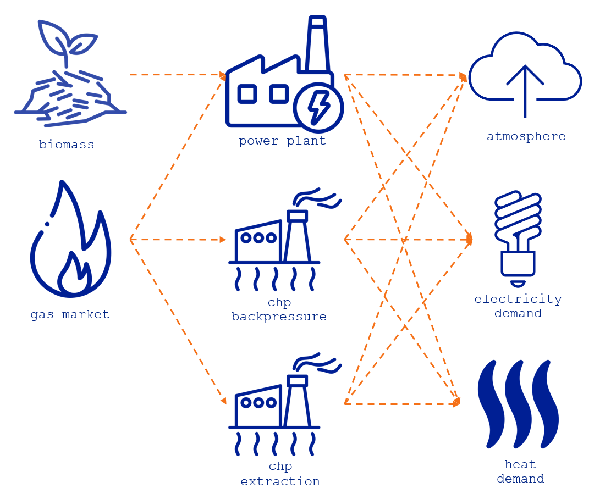
The example has two sources of energy biomass and gas_market, three conversion assets power_plant, chp_backpressure, and chp_extraction, two demands of energy represented by electricity_demand and heat_demand, and finally a by-product CO2 emmisions that goes to the asset atmosphere. The table below shows the type of each asset. Notice that the biomass asset is modeled as a storage and the atmosphere as a consumer. We will return to these definitions later in this section, but bear with us and keep this in mind.
| Row | asset | type | capacity | consumer_balance_sense |
|---|---|---|---|---|
| String31 | String15 | Int64 | String3 | |
| 1 | power_plant | conversion | 400 | == |
| 2 | chp_backpressure | conversion | 35 | == |
| 3 | chp_extraction | conversion | 35 | == |
| 4 | gas_market | producer | 1000 | == |
| 5 | biomass | storage | 400 | == |
| 6 | electricity_demand | consumer | 0 | == |
| 7 | heat_demand | consumer | 0 | >= |
| 8 | atmosphere | consumer | 0 | >= |
Notice that the heat_demand and the atmosphere are modeled as consumer assets with a sense $\geq$, meaning that the sum
As for the flexible time resolution, the flows-rep-periods-partitions file defines them for the flows in the energy system, as shown below. Here, the flows that go to the atmosphere have a uniform 24h resolution (i.e., daily); this will reduce the number of variables we need to account for the CO2 emissions and consider only one variable per day. The flows going out of the gas_market are every two hours, and the ones from the biomass every three hours. Why? Because we want to showcase in this example the fully flexible resolution in the model, however, in a real-life case study, the resolution will often be related to the energy carrier's dynamics or another expert's criteria to reduce the number of constraints.
| Row | from_asset | to_asset | specification | partition |
|---|---|---|---|---|
| String31 | String31 | String7 | Int64 | |
| 1 | power_plant | atmosphere | uniform | 24 |
| 2 | chp_backpressure | atmosphere | uniform | 24 |
| 3 | chp_extraction | atmosphere | uniform | 24 |
| 4 | gas_market | power_plant | uniform | 2 |
| 5 | gas_market | chp_backpressure | uniform | 2 |
| 6 | gas_market | chp_extraction | uniform | 2 |
| 7 | biomass | power_plant | uniform | 3 |
The assets and flows resolution determine the resolution of the model constraints considering the rules outlined in the table under the section flexible time resolution.
Constraints for Flows Relationships
Thanks to the flexible asset connection in the model, any asset can have multiple inputs and outputs, as illustrated in the figure at the beginning of this section. By default, the flows corresponding to these inputs and outputs are independent of each other within the model. However, there are situations where these flows are related to each other. For example, by-products like CO2 emissions depend on the fuel consumption. Another instance is the residual heat produced by power plants, such as small modular reactors, when generating electricity. Additionally, combined heat and power (CHP) technologies can yield residual heat during electricity production and may have a more complex operational feasible region when generating both electricity and heat.
To model these interactions, we use a linear combination of flow variables known as flow relationships. These are outlined in the constraints found in the formulation section. The relationships are defined in the flows_relationships file located in the example folder. In this section, we present these relationships in accordance with the constraints established in the model.
| Row | flow_1 | sense | constant | ratio | flow_2 |
|---|---|---|---|---|---|
| String | String3 | Float64 | Float64 | String | |
| 1 | (power_plant, electricity_demand) | == | 0.0 | 4.0 | (power_plant, heat_demand) |
| 2 | (power_plant, atmosphere) | == | 0.0 | 0.1575 | (gas_market, power_plant) |
| 3 | (power_plant, atmosphere) | == | 0.0 | 0.15 | (biomass, power_plant) |
| 4 | (chp_backpressure, electricity_demand) | == | 0.0 | 2.0 | (chp_backpressure, heat_demand) |
| 5 | (chp_backpressure, atmosphere) | == | 0.0 | 0.18 | (chp_backpressure, electricity_demand) |
| 6 | (chp_extraction, electricity_demand) | >= | 0.0 | 1.8 | (chp_extraction, heat_demand) |
| 7 | (chp_extraction, electricity_demand) | <= | 35.0 | -0.15 | (chp_extraction, heat_demand) |
| 8 | (chp_extraction, electricity_demand) | >= | 15.0 | -0.15 | (chp_extraction, heat_demand) |
| 9 | (chp_extraction, heat_demand) | <= | 13.61 | 0.0 | (chp_extraction, electricity_demand) |
| 10 | (chp_extraction, atmosphere) | == | 0.0 | 0.108 | (chp_extraction, electricity_demand) |
The table illustrates that the power_plant asset has three flow relationships: one connecting electricity and heat outputs, and two relating to CO2 emissions released into the atmosphere, which vary depending on the fuel used for energy production. For the chp_backpressure asset, there are two relationships: one representing the fixed ratio between electricity and heat, and another concerning CO2 emissions. Lastly, the chp_extraction asset features a fixed ratio for CO2 emissions, along with a set of inequalities that define the feasible operating region for heat and electricity production. The following figure displays this feasible region:
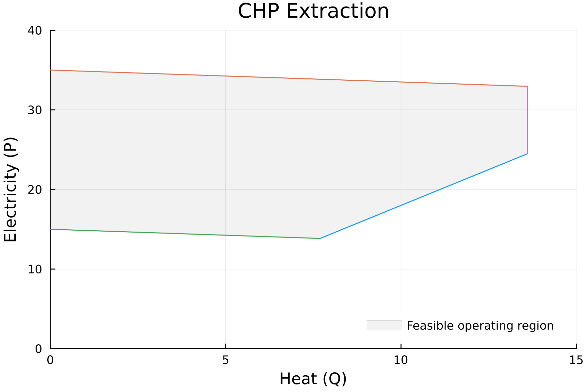
" #hide\n# To reproduce the chp extraction plot in Julia, use the following script #hide\nusing Plots " ⋯ 6242 bytes ⋯ " #hide\n) #hide\nsavefig(\"chp-extraction.png\") #hide\n"That looks cool 🤓 but, wait a minute! What about the flexible temporal resolution?
It's straightforward: When it comes to the constraints created by the flow relationships, the resulting resolution follows the highest resolution of the flows involved in the relationship. In simpler terms, this means it is determined by max(flow1 resolution, flow2 resolution). Consequently, the resulting constraints are considered as energy constraints. Where do I find this information? Remember, the table in the section titled flexible time resolution summarizes all the rules 😉 .Now, let’s examine each relationship ($x \in \mathcal{X}$) closely:
- Relationship $x_1$ = flow1(powerplant, electricitydemand) and flow2(powerplant, heatdemand): both flows have an hourly resolution (i.e., deafult value) since they don't have any definition in the
flows-rep-periods-partitionsfile. Therefore, the flows relationship constraint is also hourly.
\[\begin{aligned} & \text{flows\_relationship}_{x_1, 1, 1:1}: \\ & v^{\text{flow}}_{(\text{power\_plant},\text{electricity\_demand}),1,1:1} = 4.0 \cdot v^{\text{flow}}_{(\text{power\_plant},\text{heat\_demand}),1,1:1} \\ & \text{flows\_relationship}_{x_1, 1, 2:2}: \\ & v^{\text{flow}}_{(\text{power\_plant},\text{electricity\_demand}),1,2:2} = 4.0 \cdot v^{\text{flow}}_{(\text{power\_plant},\text{heat\_demand}),1,2:2} \\ & ... \end{aligned}\]
- Relationship
x_2= flow1(powerplant, atmosphere) and flow2(gasmarket, power_plant): The first flow has an uniform resolution of 24h and the second flow has an uniform resolution of 2h in their definitions. Therefore, the flows relationship constraint is in the highest resolution of both, i.e., every 24h. In addition, the constraint accounts for the durations, so each flow variable is then multiply by the it.
\[\begin{aligned} & \text{flows\_relationship}_{x_2, 1, 1:24}: \\ & 24 \cdot v^{\text{flow}}_{(\text{power\_plant},\text{atmosphere}),1,1:24} = 0.1575 \cdot \sum_{b=1}^{12} 2 \cdot v^{\text{flow}}_{(\text{gas\_market},\text{power\_plant}),1,(2b-1):(2b)} \end{aligned}\]
- Relationship $x_3$ = flow1(powerplant, atmosphere) and flow2(biomass, powerplant): The first flow has an uniform resolution of 24h and the second flow has an uniform resolution of 3h in their definitions. Therefore, the flows relationship constraint is in the highest resolution of both, i.e., every 24h. In addition, the constraint accounts for the durations, so each flow variable is then multiply by the it.
\[\begin{aligned} & \text{flows\_relationship}_{x_3, 1, 1:24}: \\ & 24 \cdot v^{\text{flow}}_{(\text{power\_plant},\text{atmosphere}),1,1:24} = 0.15 \cdot \sum_{b=1}^{8} 3 \cdot v^{\text{flow}}_{(\text{biomass},\text{power\_plant}),1,(3b-2):(3b)} \end{aligned}\]
- Relationship $x_4$ = flow1(chpbackpressure, electricitydemand) and flow2(chpbackpressure, heatdemand): both flows have an hourly resolution (i.e., deafult value). Therefore, the flows relationship constraint is also hourly.
\[\begin{aligned} & \text{flows\_relationship}_{x_4, 1, 1:1}: \\ & v^{\text{flow}}_{(\text{chp\_backpressure},\text{electricity\_demand}),1,1:1} = 2.0 \cdot v^{\text{flow}}_{(\text{chp\_backpressure},\text{heat\_demand}),1,1:1} \\ & \text{flows\_relationship}_{x_4, 1, 2:2}: \\ & v^{\text{flow}}_{(\text{chp\_backpressure},\text{electricity\_demand}),1,2:2} = 2.0 \cdot v^{\text{flow}}_{(\text{chp\_backpressure},\text{heat\_demand}),1,2:2} \\ & ... \end{aligned}\]
- Relationship $x_5$ = flow1(chpbackpressure, atmosphere) and flow2(chpbackpressure, electricity_demand): The first flow has an uniform resolution of 24h and the second flow has an uniform resolution of 1h in their definitions. Therefore, the flows relationship constraint is in the highest resolution of both, i.e., every 24h. In addition, the constraint accounts for the durations, so each flow variable is then multiply by the it.
\[\begin{aligned} & \text{flows\_relationship}_{x_5, 1, 1:24}: \\ & 24 \cdot v^{\text{flow}}_{(\text{chp\_backpressure},\text{atmosphere}),1,1:24} = 0.18 \cdot \sum_{b=1}^{24} v^{\text{flow}}_{(\text{chp\_backpressure},\text{electricity\_demand}),1,b:b} \end{aligned}\]
- Relationship $x_6$ = flow1(chpextraction, electricitydemand) and flow2(chpextraction, heatdemand): both flows have an hourly resolution (i.e., deafult value). Therefore, the flows relationship constraint is also hourly.
\[\begin{aligned} & \text{flows\_relationship}_{x_6, 1, 1:1}: \\ & v^{\text{flow}}_{(\text{chp\_extraction},\text{electricity\_demand}),1,1:1} \geq 1.8 \cdot v^{\text{flow}}_{(\text{chp\_extraction},\text{heat\_demand}),1,1:1} \\ & \text{flows\_relationship}_{x_6, 1, 2:2}: \\ & v^{\text{flow}}_{(\text{chp\_extraction},\text{electricity\_demand}),1,2:2} \geq 1.8 \cdot v^{\text{flow}}_{(\text{chp\_extraction},\text{heat\_demand}),1,2:2} \\ & ... \end{aligned}\]
- Relationship $x_7$ = flow1(chpextraction, electricitydemand) and flow2(chpextraction, heatdemand): both flows have an hourly resolution (i.e., deafult value). Therefore, the flows relationship constraint is also hourly.
\[\begin{aligned} & \text{flows\_relationship}_{x_7, 1, 1:1}: \\ & v^{\text{flow}}_{(\text{chp\_extraction},\text{electricity\_demand}),1,1:1} \leq 35 - 0.15 \cdot v^{\text{flow}}_{(\text{chp\_extraction},\text{heat\_demand}),1,1:1} \\ & \text{flows\_relationship}_{x_7, 1, 2:2}: \\ & v^{\text{flow}}_{(\text{chp\_extraction},\text{electricity\_demand}),1,2:2} \leq 35 - 0.15 \cdot v^{\text{flow}}_{(\text{chp\_extraction},\text{heat\_demand}),1,2:2} \\ & ... \end{aligned}\]
- Relationship $x_8$ = flow1(chpextraction, electricitydemand) and flow2(chpextraction, heatdemand): both flows have an hourly resolution (i.e., deafult value). Therefore, the flows relationship constraint is also hourly.
\[\begin{aligned} & \text{flows\_relationship}_{x_8, 1, 1:1}: \\ & v^{\text{flow}}_{(\text{chp\_extraction},\text{electricity\_demand}),1,1:1} \geq 15 - 0.15 \cdot v^{\text{flow}}_{(\text{chp\_extraction},\text{heat\_demand}),1,1:1} \\ & \text{flows\_relationship}_{x_8, 1, 2:2}: \\ & v^{\text{flow}}_{(\text{chp\_extraction},\text{electricity\_demand}),1,2:2} \geq 15 - 0.15 \cdot v^{\text{flow}}_{(\text{chp\_extraction},\text{heat\_demand}),1,2:2} \\ & ... \end{aligned}\]
- Relationship $x_9$ = flow1(chpextraction, heatdemand) and flow2(chpextraction, electricitydemand): both flows have an hourly resolution (i.e., deafult value). Therefore, the flows relationship constraint is also hourly. This constraint reprsents a simple limit for the maximum heat flow.
\[\begin{aligned} & \text{flows\_relationship}_{x_9, 1, 1:1}: \\ & v^{\text{flow}}_{(\text{chp\_extraction},\text{heat\_demand}),1,1:1} \leq 13.61 \\ & \text{flows\_relationship}_{x_9, 1, 2:2}: \\ & v^{\text{flow}}_{(\text{chp\_extraction},\text{heat\_demand}),1,2:2} \leq 13.61 \\ & ... \end{aligned}\]
- Relationship $x_{10}$ = flow1(chpextraction, atmosphere) and flow2(chpextraction, electricity_demand): The first flow has an uniform resolution of 24h and the second flow has an uniform resolution of 1h in their definitions. Therefore, the flows relationship constraint is in the highest resolution of both, i.e., every 24h. In addition, the constraint accounts for the durations, so each flow variable is then multiply by the it.
\[\begin{aligned} & \text{flows\_relationship}_{x_{10}, 1, 1:24}: \\ & 24 \cdot v^{\text{flow}}_{(\text{chp\_extraction},\text{atmosphere}),1,1:24} = 0.108 \cdot \sum_{b=1}^{24} v^{\text{flow}}_{(\text{chp\_extraction},\text{electricity\_demand}),1,b:b} \end{aligned}\]
The Conversion Coefficient and the Conversion Balance Constraints
The conversion coefficient is a key parameter in the conversion balance constraints, especially for assets with MIMO and flexible temporal resolution. Remember that only flows with conversion coefficient greater than zero are considered to determine the resolution of the conversion balance constraint. So, let's explore each conversion asset in the example.
- power_plant: This asset has two inputs and three outputs. However, the outputs to
heat_demandand theatmospherehave a conversion coefficient of zero, as shown in the table below. This indicates that the constraint's resolution will be determined by the flows coming from thebiomassandgas_market, alongside the output flow toelectricity_demand. Therefore, the resolution for the conversion balance of this asset is:max(3h, 2h, 1h) = 3h.
| Row | from_asset | to_asset | conversion_coefficient |
|---|---|---|---|
| String31 | String31 | Float64 | |
| 1 | gas_market | power_plant | 0.45 |
| 2 | biomass | power_plant | 0.3 |
| 3 | power_plant | electricity_demand | 1.0 |
| 4 | power_plant | heat_demand | 0.0 |
| 5 | power_plant | atmosphere | 0.0 |
- chp_backpressure: This asset has one input and three outputs. However, the output to
atmospherehas a conversion coefficient of zero, as shown in the table below. This indicates that the constraint's resolution will be determined by the flow coming from thegas_market, alongside the outputs flows toelectricity_demandandheat_demand. Therefore, the resolution for the conversion balance of this asset is:max(2h, 1h, 1h) = 2h.
| Row | from_asset | to_asset | conversion_coefficient |
|---|---|---|---|
| String31 | String31 | Float64 | |
| 1 | gas_market | chp_backpressure | 1.0 |
| 2 | chp_backpressure | electricity_demand | 1.41 |
| 3 | chp_backpressure | heat_demand | 0.49 |
| 4 | chp_backpressure | atmosphere | 0.0 |
- chp_extraction: This asset has one input and three outputs. However, the output to
atmospherehas a conversion coefficient of zero, as shown in the table below. This indicates that the constraint's resolution will be determined by the flow coming from thegas_market, alongside the outputs flows toelectricity_demandandheat_demand. Therefore, the resolution for the conversion balance of this asset is:max(2h, 1h, 1h) = 2h.
| Row | from_asset | to_asset | conversion_coefficient |
|---|---|---|---|
| String31 | String31 | Float64 | |
| 1 | gas_market | chp_extraction | 1.0 |
| 2 | chp_extraction | electricity_demand | 1.0 |
| 3 | chp_extraction | heat_demand | 1.0 |
| 4 | chp_extraction | atmosphere | 0.0 |
The Capacity Coefficient and the Maximum Capacity Constraints
The capacity_coefficient determines which output flows of an asset will be included in the capacity constraints for that asset. This parameter is particularly important when an asset has outputs that are by-products, such as CO2 emissions. For example, all outputs from conversion assets to the atmosphere have a coefficient of zero (as shown in the table below), indicating that they will not be considered in the capacity constraints.
| Row | from_asset | to_asset | capacity_coefficient |
|---|---|---|---|
| String31 | String31 | Float64 | |
| 1 | power_plant | atmosphere | 0.0 |
| 2 | chp_backpressure | atmosphere | 0.0 |
| 3 | chp_extraction | atmosphere | 0.0 |
Remember that the capacity constraints resolution are defined in the lowest resolution of the output flows since it is a power constraint. Notice that all the conversion assets have three outputs electricity_demand, heat_demand, and atmosphere. Therefore, the resolution for the output capacity constraint of those assets is: min(1h, 1h, 24h) = 1h.
The Atmosphere as a Consumer Asset
From the following table, you can see that the atmosphere asset is modeled as a consumer assets with a sense $\geq$, meaning that the sum of all inputs needs to be greater than the peak_demand, i.e., greater than zero in this case.
| Row | asset | consumer_balance_sense | peak_demand |
|---|---|---|---|
| String31 | String3 | Float64? | |
| 1 | electricity_demand | == | 80.0 |
| 2 | heat_demand | >= | 35.0 |
| 3 | atmosphere | >= | 0.0 |
In addition, the resolution of all the flows comming into the atmosphere asset is 24h, i.e., daily, meaning that the resolution of the consumer balance for this asset is also 24h:
\[\begin{aligned} & \text{consumer\_balance}_{\text{atmosphere}, 1, 1:24}: \\ & v^{\text{flow}}_{(\text{power\_plant},\text{atmosphere}),1,1:24} + v^{\text{flow}}_{(\text{chp\_backpressure},\text{atmosphere}),1,1:24} + v^{\text{flow}}_{(\text{chp\_extraction},\text{atmosphere}),1,1:24} \geq 0 \end{aligned}\]
Notice that the flows are defined as power (i.e., instantaneous value); therefore, the result of all the flows going to the atmosphere will represent the average CO2 emissions within the day. To compute the total daily emissions, multiply the flow by the duration (i.e., 24h) and then get the total daily value.
As explained in the modeling greenhouse gas emissions section, you can alternatively model the atmosphere as a storage asset and account for the total emissions as the storage level of the asset.
- 1Only inputs or outputs with
conversion coefficient$\geq 0$ are considered to determine the resolution of the conversion balance constraint.